![]()
library(R2jags)
library(coda)
library(mcmcplots)
library(stringr)
library(plyr)
library(xtable)
library(ggplot2)
source("plotPost.R")
set.seed(12345) # for reproducibility
load("laliga.RData")
# -1 = Away win, 0 = Draw, 1 = Home win
laliga$MatchResult <- sign(laliga$HomeGoals - laliga$AwayGoals)
# Creating a data frame d with only the complete match results
d <- na.omit(laliga)
teams <- unique(c(d$HomeTeam, d$AwayTeam))
seasons <- unique(d$Season)
# A list for JAGS with the data from d where the strings are coded as
# integers
data_list <- list(HomeGoals = d$HomeGoals, AwayGoals = d$AwayGoals, HomeTeam = as.numeric(factor(d$HomeTeam,
levels = teams)), AwayTeam = as.numeric(factor(d$AwayTeam, levels = teams)),
Season = as.numeric(factor(d$Season, levels = seasons)), n_teams = length(teams),
n_games = nrow(d), n_seasons = length(seasons))
# Convenience function to generate the type of column names Jags outputs.
col_name <- function(name, ...) {
paste0(name, "[", paste(..., sep = ","), "]")
}
data_list$n_seasons<-NULL
data_list$Season<-NULLGeneralised Linear Mixed Models (JAGS)
Quarto
R
Academia
Software
Statistics
Abstract
This tutorial will focus on the use of Bayesian estimation to fit simple linear regression models …
Keywords
Software, Statistics, Stan
This tutorial will focus on the use of Bayesian estimation to fit simple linear regression models. BUGS (Bayesian inference Using Gibbs Sampling) is an algorithm and supporting language (resembling R) dedicated to performing the Gibbs sampling implementation of Markov Chain Monte Carlo (MCMC) method. Dialects of the BUGS language are implemented within three main projects:
OpenBUGS - written in component pascal.
JAGS - (Just Another Gibbs Sampler) - written in
C++.STAN - a dedicated Bayesian modelling framework written in
C++and implementing Hamiltonian MCMC samplers.
Whilst the above programs can be used stand-alone, they do offer the rich data pre-processing and graphical capabilities of R, and thus, they are best accessed from within R itself. As such there are multiple packages devoted to interfacing with the various software implementations:
R2OpenBUGS - interfaces with
OpenBUGSR2jags - interfaces with
JAGSrstan - interfaces with
STAN
This tutorial will demonstrate how to fit models in JAGS (Plummer (2004)) using the package R2jags (Su et al. (2015)) as interface, which also requires to load some other packages.
Overview
In some respects, Generalized Linear Mixed effects Models (GLMM) are a hierarchical extension of Generalized linear models (GLM) in a similar manner that Linear Mixed effects Models (LMM) are a hierarchical extension of Linear Models (LM). However, whilst the Gaussian (normal) distribution facilitates a relatively straight way of generating the marginal likelihood of the observed response by integrating likelihoods across all possible (and unobserved) levels of a random effect to yield parameter estimates, the same cannot be said for other distributions. Consequently various approximations have been developed to estimate the fixed and random parameters for GLMM’s:
Penalized quasi-likelihood (PQL). This method approximates a quasi-likelihood by iterative fitting of (re)weighted linear mixed effects models based on the fit of GLM fit. Specifically, it estimates the fixed effects parameters by fitting a GLM that incorporates a correlation (variance-covariance) structure resulting from a LMM and then refits a LMM to re-estimate the variance-covariance structure by using the variance structure from the previous GLM. The cycle continues to iterate until either the fit improvement is below a threshold or a defined number of iterations has occurred. Whilst this is a relatively simple approach, that enables us to leverage methodologies for accommodating heterogeneity and spatial/temporal autocorrelation, it is known to perform poorly (estimates biased towards large variance) for Poisson distributions when the expected value is less than \(5\) and for binary data when the expected number of successes or failures are less than \(5\). Moreover, as it approximates quasi-likelihood rather than likelihood, likelihood based inference and information criterion methods (such as likelihood ratio tests and AIC) are not appropriate with this approach. Instead, Wald tests are required for inference.
Laplace approximation. This approach utilises a second-order Taylor series expansion to approximate (a mathematical technique for approximating the properties of a function around a point by taking multiple derivatives of the function and summing them together) the likelihood function. If we assume that the likelihood function is approximately normal and thus a quadratic function on a log scale, we can use second-order Taylor series expansion to approximate this likelihood. Whilst this approach is considered to be more accurate than PQL, it is considerably slower and unable to accommodate alternative variance and correlation structures.
Gauss-Hermite quadrature (GHQ). This approach approximates the marginal likelihood by approximating the value of integrals at specific points (quadratures). This technique can be further adapted by allowing the number of quadratures and their weights to be optimized via a set of rules.
Markov-chain Monte-Carlo (MCMC). This takes a bruit force approach by recreating the likelihood by traversing the likelihood function with sequential sampling proportional to the likelihood. Although this approach is very robust (when the posteriors have converged), they are computationally very intense. Interestingly, some (including Andrew Gelman) argue that PQL, Laplace and GHQ do not yield estimates. Rather they are only approximations of estimates. By contrast, as MCMC methods are able to integrate over all levels by bruit force, the resulting parameters are indeed true estimates.
We will focus on the last approach which is the more general among the ones considered here and which is based on a Bayesian approach, which can be very flexible and accurate, yet very slow and complex.
Hierarchical Poisson regression
The model I will be developing is a Bayesian hierarchical Poisson regression model which I borrow from a very interesting work about modelling match results in soccer, available both as a technical report and as a series of online posts. The objective of the analysis was to model the match results from the last five seasons of La Liga, the premium Spanish football (soccer) league. In total there were \(1900\) rows in the dataset each with information regarding which was the home and away team, what these teams scored and what season it was. The goal outcomes of the teams are assumed to be distributed according to a Poisson distribution, while also taking into account the dependence between the goals scored by the attacking and defensive teams in each match.
Loading the data
I start by loading libraries, reading in the data and preprocessing it for JAGS. The last \(50\) matches have unknown outcomes and I create a new data frame d holding only matches with known outcomes. I will come back to the unknown outcomes later when it is time to use the model for prediction. I also load a R function called plotPost which was previously coded in order to facilitate the plotting of the posterior results of the model. All information about the model structure, data and functions can be found on the webpage of the original post of the author or in his technical report (Bååth (2015)).
Modeling Match Results
Data check
How are the number of goals for each team in a football match distributed? Well, let’s start by assuming that all football matches are roughly equally long, that both teams have many chances at making a goal and that each team have the same probability of making a goal each goal chance. Given these assumptions the distribution of the number of goals for each team should be well captured by a Poisson distribution. A quick and dirty comparison between the actual distribution of the number of scored goals and a Poisson distribution having the same mean number of scored goals support this notion.
par(mfcol = c(2, 1), mar = rep(2.2, 4))
hist(c(d$AwayGoals, d$HomeGoals), xlim = c(-0.5, 8), breaks = -1:9 + 0.5, main = "Distribution of the number of goals\nscored by a team in a match.")
mean_goals <- mean(c(d$AwayGoals, d$HomeGoals))
hist(rpois(9999, mean_goals), xlim = c(-0.5, 8), breaks = -1:9 + 0.5, main = "Random draw from a Poisson distribution with\nthe same mean as the distribution above.")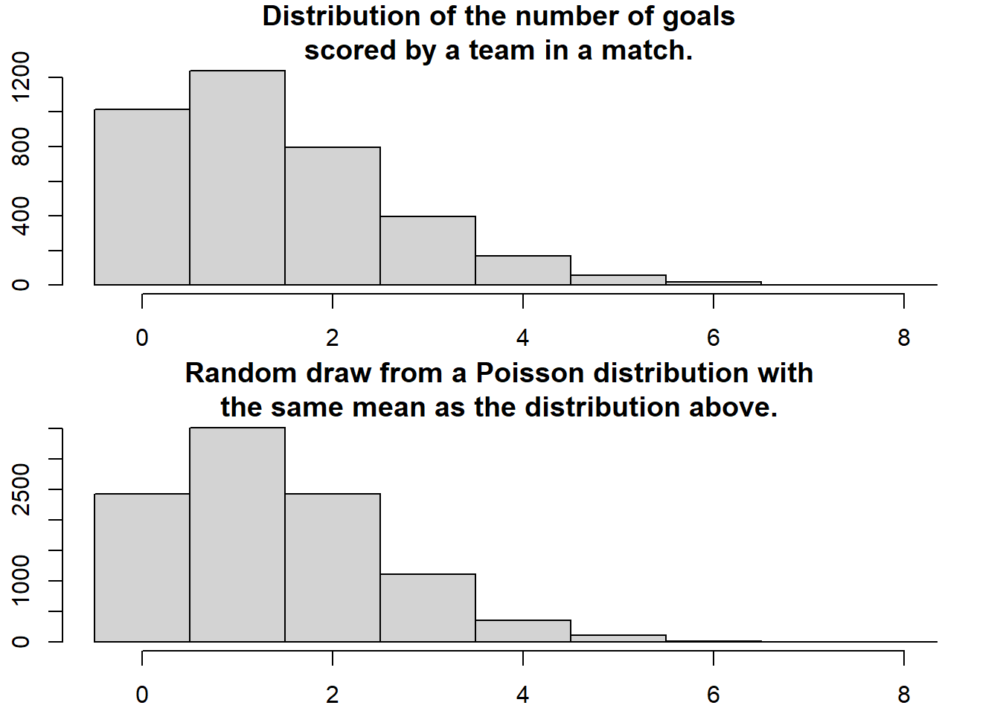
Model fitting
All teams aren’t equally good and it will be assumed that all teams have a latent skill variable and the skill of a team minus the skill of the opposing team defines the predicted outcome of a game. As the number of goals are assumed to be Poisson distributed it is natural that the skills of the teams are on the log scale of the mean of the distribution. The distribution of the number of goals for team \(i\) when facing team \(j\) is then
\[ \text{Goals} \sim \text{Pois}(\lambda) \]
where \(\log(\lambda)=\text{baseline} + \text{skill}_i - \text{skill}_j\). Baseline is the log average number of goals when both teams are equally good. The goal outcome of a match between home team \(i\) and away team \(j\) is modeled as:
\[ \text{HomeGoals}_{ij} \sim \text{Pois}(\lambda_{\text{home},ij}), \]
\[ \text{AwayGoals}_{ij} \sim \text{Pois}(\lambda_{\text{away},ij}), \]
where
\[ \log(\lambda_{\text{home},ij}) = \text{baseline} + \text{skill}_i - \text{skill}_j, \]
\[ \log(\lambda_{\text{away},ij}) = \text{baseline} + \text{skill}_j - \text{skill}_i. \]
Add some priors to that and you’ve got a Bayesian model going! I set the prior distributions over the baseline to:
\[ \text{baseline} \sim N(0, 4^2), \]
and the skill of all \(n\) teams using a hierarchical approach to :
\[ \text{skill}_{1,\ldots,n} \sim N(\mu_{\text{teams}}, \sigma^2_{\text{teams}}), \]
so that teams are assumed to have similar but not identical mean and variance parameters for thier skill parameters. These priors are made vague. For example, the prior on the baseline have a SD of 4 but since this is on the log scale of the mean number of goals it corresponds to one SD from the mean 0 covering the range of [0.02,54.6] goals. Turning this into a JAGS model requires some minor adjustments. The model have to loop over all the match results, which adds some for-loops. JAGS parameterises the normal distribution with precision (the reciprocal of the variance) instead of variance so the hyperpriors have to be converted. Finally I have to “anchor” the skill of one team to a constant otherwise the mean skill can drift away freely (conrner constraint) and the model cannot be identified. Doing these adjustments results in the following model description:
m1_string <- "model {
for(i in 1:n_games) {
HomeGoals[i] ~ dpois(lambda_home[HomeTeam[i],AwayTeam[i]])
AwayGoals[i] ~ dpois(lambda_away[HomeTeam[i],AwayTeam[i]])
}
for(home_i in 1:n_teams) {
for(away_i in 1:n_teams) {
lambda_home[home_i, away_i] <- exp(baseline + skill[home_i] - skill[away_i])
lambda_away[home_i, away_i] <- exp(baseline + skill[away_i] - skill[home_i])
}
}
skill[1] <- 0
for(j in 2:n_teams) {
skill[j] ~ dnorm(group_skill, group_tau)
}
group_skill ~ dnorm(0, 0.0625)
group_tau <- 1 / pow(group_sigma, 2)
group_sigma ~ dunif(0, 3)
baseline ~ dnorm(0, 0.0625)
}
"
## write the model to a text file
writeLines(m1_string, con = "model1.txt")Next, we define the nodes (parameters and derivatives) to monitor and the chain parameters.
params <- c("baseline", "skill", "group_skill", "group_sigma")
nChains = 2
burnInSteps = 3000
thinSteps = 1
numSavedSteps = 15000 #across all chains
nIter = ceiling(burnInSteps + (numSavedSteps * thinSteps)/nChains)
nIterNA [1] 10500Start the JAGS model (check the model, load data into the model, specify the number of chains and compile the model). Run the JAGS code via the R2jags interface and the jags function. Note that the first time jags is run after the R2jags package is loaded, it is often necessary to run any kind of randomisation function just to initiate the .Random.seed variable.
m1.r2jags <- jags(data = data_list, inits = NULL, parameters.to.save = params,
model.file = "model1.txt", n.chains = nChains, n.iter = nIter,
n.burnin = burnInSteps, n.thin = thinSteps)NA Compiling model graph
NA Resolving undeclared variables
NA Allocating nodes
NA Graph information:
NA Observed stochastic nodes: 3700
NA Unobserved stochastic nodes: 31
NA Total graph size: 9151
NA
NA Initializing modelprint(m1.r2jags)NA Inference for Bugs model at "model1.txt", fit using jags,
NA 2 chains, each with 10500 iterations (first 3000 discarded)
NA n.sims = 15000 iterations saved
NA mu.vect sd.vect 2.5% 25% 50% 75% 97.5%
NA baseline 0.281 0.014 0.253 0.271 0.281 0.291 0.309
NA group_sigma 0.225 0.034 0.169 0.201 0.222 0.246 0.302
NA group_skill 0.016 0.062 -0.104 -0.026 0.016 0.057 0.136
NA skill[1] 0.000 0.000 0.000 0.000 0.000 0.000 0.000
NA skill[2] 0.185 0.061 0.064 0.145 0.185 0.226 0.307
NA skill[3] 0.017 0.069 -0.117 -0.030 0.017 0.064 0.154
NA skill[4] -0.013 0.061 -0.132 -0.054 -0.013 0.028 0.109
NA skill[5] -0.180 0.098 -0.376 -0.247 -0.179 -0.113 0.008
NA skill[6] -0.048 0.063 -0.170 -0.090 -0.049 -0.007 0.081
NA skill[7] -0.013 0.058 -0.128 -0.051 -0.013 0.025 0.103
NA skill[8] 0.199 0.060 0.084 0.159 0.199 0.240 0.317
NA skill[9] -0.077 0.063 -0.200 -0.119 -0.076 -0.034 0.046
NA skill[10] -0.110 0.062 -0.230 -0.152 -0.110 -0.068 0.011
NA skill[11] 0.698 0.057 0.588 0.658 0.696 0.736 0.811
NA skill[12] 0.133 0.060 0.017 0.092 0.133 0.174 0.249
NA skill[13] 0.017 0.059 -0.096 -0.023 0.016 0.057 0.132
NA skill[14] 0.038 0.061 -0.078 -0.003 0.037 0.080 0.160
NA skill[15] -0.008 0.060 -0.124 -0.048 -0.009 0.033 0.108
NA skill[16] -0.117 0.099 -0.305 -0.186 -0.118 -0.051 0.080
NA skill[17] 0.606 0.058 0.495 0.566 0.606 0.646 0.720
NA skill[18] -0.071 0.070 -0.205 -0.118 -0.072 -0.026 0.071
NA skill[19] -0.115 0.069 -0.247 -0.162 -0.115 -0.068 0.022
NA skill[20] 0.075 0.064 -0.045 0.032 0.074 0.117 0.204
NA skill[21] -0.104 0.065 -0.231 -0.148 -0.105 -0.060 0.027
NA skill[22] -0.212 0.099 -0.403 -0.281 -0.213 -0.146 -0.017
NA skill[23] -0.161 0.101 -0.360 -0.230 -0.159 -0.094 0.036
NA skill[24] -0.118 0.101 -0.319 -0.186 -0.118 -0.050 0.085
NA skill[25] 0.009 0.071 -0.131 -0.037 0.010 0.057 0.147
NA skill[26] 0.058 0.069 -0.079 0.011 0.058 0.104 0.195
NA skill[27] -0.061 0.080 -0.218 -0.115 -0.060 -0.005 0.088
NA skill[28] -0.118 0.079 -0.272 -0.170 -0.119 -0.065 0.037
NA skill[29] -0.059 0.105 -0.260 -0.130 -0.062 0.011 0.155
NA deviance 10912.856 7.406 10900.319 10907.610 10912.214 10917.514 10928.852
NA Rhat n.eff
NA baseline 1.001 15000
NA group_sigma 1.002 1500
NA group_skill 1.002 1600
NA skill[1] 1.000 1
NA skill[2] 1.005 410
NA skill[3] 1.009 180
NA skill[4] 1.007 670
NA skill[5] 1.002 2400
NA skill[6] 1.001 4400
NA skill[7] 1.002 2400
NA skill[8] 1.001 11000
NA skill[9] 1.001 15000
NA skill[10] 1.009 190
NA skill[11] 1.001 4700
NA skill[12] 1.005 340
NA skill[13] 1.001 14000
NA skill[14] 1.006 310
NA skill[15] 1.002 2600
NA skill[16] 1.003 12000
NA skill[17] 1.001 15000
NA skill[18] 1.002 2700
NA skill[19] 1.003 880
NA skill[20] 1.002 1800
NA skill[21] 1.002 1000
NA skill[22] 1.001 2800
NA skill[23] 1.001 15000
NA skill[24] 1.005 380
NA skill[25] 1.001 15000
NA skill[26] 1.002 2300
NA skill[27] 1.001 15000
NA skill[28] 1.001 15000
NA skill[29] 1.001 13000
NA deviance 1.001 3900
NA
NA For each parameter, n.eff is a crude measure of effective sample size,
NA and Rhat is the potential scale reduction factor (at convergence, Rhat=1).
NA
NA DIC info (using the rule, pD = var(deviance)/2)
NA pD = 27.4 and DIC = 10940.3
NA DIC is an estimate of expected predictive error (lower deviance is better).MCMC diagnostics
Using the generated MCMC samples I can now look at the credible skill values of any team. Let’s look at the trace plot and the distribution of the skill parameters for FC Sevilla and FC Valencia.
team_par<-c(which(teams == c("FC Sevilla")), which(teams == "FC Valencia"))
denplot(m1.r2jags, parms = team_par, style = "plain", main = c("Sevilla","Valenica"))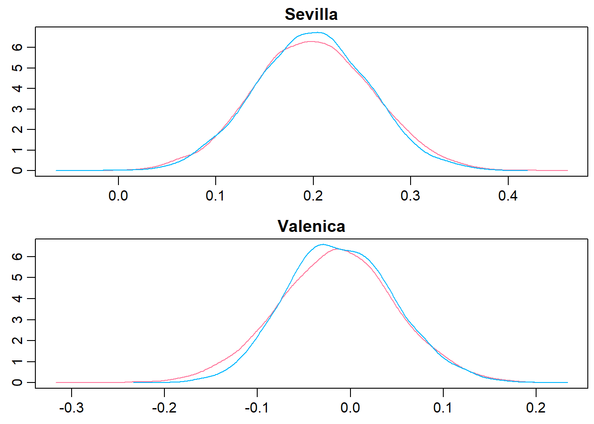
traplot(m1.r2jags, parms = team_par, style = "plain", main = c("Sevilla","Valenica"))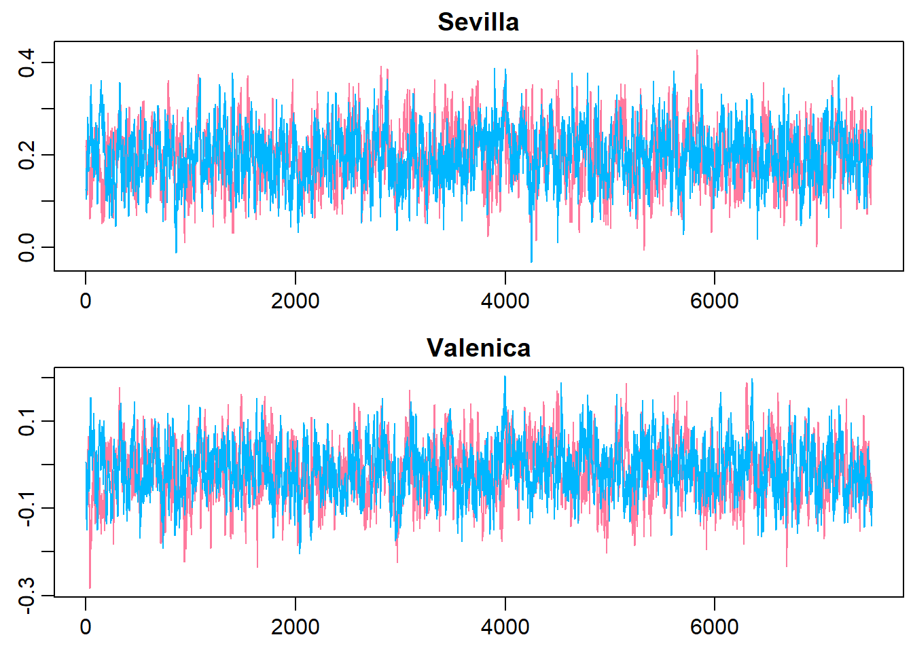
Model validation
Seems like Sevilla and Valencia have similar skill with Valencia being slightly better. Using the MCMC samples it is not only possible to look at the distribution of parameter values but it is also straight forward to simulate matches between teams and look at the credible distribution of number of goals scored and the probability of a win for the home team, a win for the away team or a draw. The following functions simulates matches with one team as home team and one team as away team and plots the predicted result together with the actual outcomes of any matches in the laliga data set.
# Plots histograms over home_goals, away_goals, the difference in goals
# and a barplot over match results.
plot_goals <- function(home_goals, away_goals) {
n_matches <- length(home_goals)
goal_diff <- home_goals - away_goals
match_result <- ifelse(goal_diff < 0, "away_win", ifelse(goal_diff > 0,
"home_win", "equal"))
hist(home_goals, xlim = c(-0.5, 10), breaks = (0:100) - 0.5)
hist(away_goals, xlim = c(-0.5, 10), breaks = (0:100) - 0.5)
hist(goal_diff, xlim = c(-6, 6), breaks = (-100:100) - 0.5)
barplot(table(match_result)/n_matches, ylim = c(0, 1))
}
plot_pred_comp1 <- function(home_team, away_team, ms) {
# Simulates and plots game goals scores using the MCMC samples from the m1
# model.
par(mar=c(2,2,2,2))
par(mfrow = c(2, 4))
baseline <- ms[, "baseline"]
home_skill <- ms[, which(teams == home_team)]
away_skill <- ms[, which(teams == away_team)]
home_goals <- rpois(nrow(ms), exp(baseline + home_skill - away_skill))
away_goals <- rpois(nrow(ms), exp(baseline + away_skill - home_skill))
plot_goals(home_goals, away_goals)
# Plots the actual distribution of goals between the two teams
home_goals <- d$HomeGoals[d$HomeTeam == home_team & d$AwayTeam == away_team]
away_goals <- d$AwayGoals[d$HomeTeam == home_team & d$AwayTeam == away_team]
plot_goals(home_goals, away_goals)
}Let’s look at Valencia (home team) vs. Sevilla (away team). The graph below shows the simulation on the first row and the historical data on the second row.
ms1<-as.matrix(m1.r2jags$BUGSoutput$sims.matrix)
plot_pred_comp1("FC Valencia", "FC Sevilla", ms1)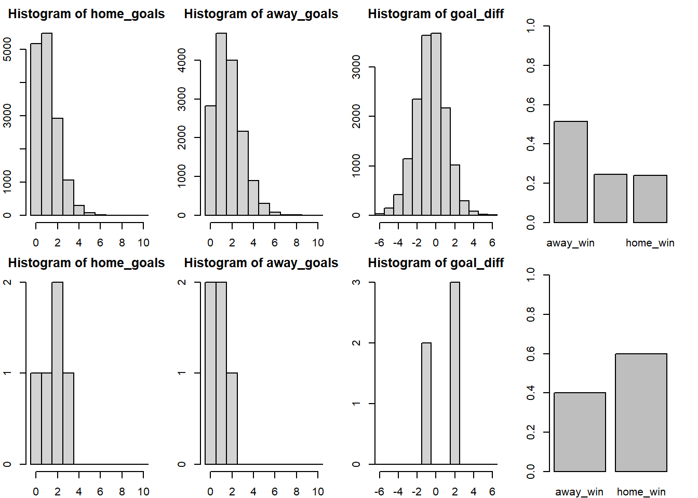
Here we discover a problem with the current model. While the simulated data looks the same, except that the home team and the away team swapped places, the historical data now shows that Sevilla often wins against Valencia when being the home team. Our model doesn’t predict this because it doesn’t considers the advantage of being the home team.
Accounting for home advantage
The only change to the model needed to account for the home advantage is to split the baseline into two components, a home baseline and an away baseline. The following JAGS model implements this change by splitting baseline into home_baseline and away_baseline.
Model fitting
# model 2
m2_string <- "model {
for(i in 1:n_games) {
HomeGoals[i] ~ dpois(lambda_home[HomeTeam[i],AwayTeam[i]])
AwayGoals[i] ~ dpois(lambda_away[HomeTeam[i],AwayTeam[i]])
}
for(home_i in 1:n_teams) {
for(away_i in 1:n_teams) {
lambda_home[home_i, away_i] <- exp( home_baseline + skill[home_i] - skill[away_i])
lambda_away[home_i, away_i] <- exp( away_baseline + skill[away_i] - skill[home_i])
}
}
skill[1] <- 0
for(j in 2:n_teams) {
skill[j] ~ dnorm(group_skill, group_tau)
}
group_skill ~ dnorm(0, 0.0625)
group_tau <- 1/pow(group_sigma, 2)
group_sigma ~ dunif(0, 3)
home_baseline ~ dnorm(0, 0.0625)
away_baseline ~ dnorm(0, 0.0625)
}
"
## write the model to a text file
writeLines(m2_string, con = "model2.txt")And now re-fit the model
params <- c("home_baseline", "away_baseline", "skill", "group_sigma", "group_skill")
nChains = 2
burnInSteps = 3000
thinSteps = 1
numSavedSteps = 15000 #across all chains
nIter = ceiling(burnInSteps + (numSavedSteps * thinSteps)/nChains)
m2.r2jags <- jags(data = data_list, inits = NULL, parameters.to.save = params,
model.file = "model2.txt", n.chains = nChains, n.iter = nIter,
n.burnin = burnInSteps, n.thin = thinSteps)NA Compiling model graph
NA Resolving undeclared variables
NA Allocating nodes
NA Graph information:
NA Observed stochastic nodes: 3700
NA Unobserved stochastic nodes: 32
NA Total graph size: 10863
NA
NA Initializing modelprint(m2.r2jags)NA Inference for Bugs model at "model2.txt", fit using jags,
NA 2 chains, each with 10500 iterations (first 3000 discarded)
NA n.sims = 15000 iterations saved
NA mu.vect sd.vect 2.5% 25% 50% 75%
NA away_baseline 0.081 0.022 0.038 0.067 0.082 0.096
NA group_sigma 0.226 0.035 0.169 0.201 0.221 0.246
NA group_skill 0.019 0.061 -0.102 -0.022 0.019 0.060
NA home_baseline 0.449 0.019 0.413 0.436 0.449 0.462
NA skill[1] 0.000 0.000 0.000 0.000 0.000 0.000
NA skill[2] 0.187 0.061 0.066 0.147 0.187 0.228
NA skill[3] 0.017 0.068 -0.120 -0.030 0.017 0.063
NA skill[4] -0.011 0.058 -0.126 -0.050 -0.011 0.028
NA skill[5] -0.179 0.100 -0.375 -0.246 -0.178 -0.111
NA skill[6] -0.044 0.062 -0.167 -0.087 -0.045 -0.002
NA skill[7] -0.009 0.061 -0.127 -0.050 -0.009 0.033
NA skill[8] 0.199 0.059 0.081 0.159 0.201 0.240
NA skill[9] -0.078 0.063 -0.205 -0.121 -0.077 -0.035
NA skill[10] -0.108 0.064 -0.234 -0.151 -0.108 -0.066
NA skill[11] 0.699 0.057 0.583 0.661 0.699 0.737
NA skill[12] 0.132 0.059 0.019 0.092 0.132 0.173
NA skill[13] 0.025 0.061 -0.097 -0.016 0.025 0.065
NA skill[14] 0.041 0.059 -0.074 0.000 0.041 0.081
NA skill[15] -0.006 0.060 -0.125 -0.046 -0.005 0.035
NA skill[16] -0.115 0.099 -0.311 -0.181 -0.116 -0.049
NA skill[17] 0.611 0.059 0.494 0.571 0.612 0.653
NA skill[18] -0.068 0.070 -0.204 -0.115 -0.069 -0.020
NA skill[19] -0.114 0.070 -0.252 -0.162 -0.113 -0.065
NA skill[20] 0.077 0.062 -0.047 0.035 0.077 0.118
NA skill[21] -0.102 0.064 -0.228 -0.145 -0.101 -0.058
NA skill[22] -0.202 0.098 -0.399 -0.266 -0.201 -0.138
NA skill[23] -0.167 0.098 -0.361 -0.233 -0.167 -0.102
NA skill[24] -0.115 0.099 -0.306 -0.183 -0.116 -0.049
NA skill[25] 0.010 0.071 -0.132 -0.035 0.010 0.057
NA skill[26] 0.061 0.069 -0.075 0.014 0.062 0.109
NA skill[27] -0.059 0.078 -0.211 -0.112 -0.060 -0.007
NA skill[28] -0.113 0.082 -0.274 -0.167 -0.113 -0.058
NA skill[29] -0.051 0.105 -0.265 -0.121 -0.050 0.021
NA deviance 10742.730 7.596 10729.548 10737.288 10742.120 10747.534
NA 97.5% Rhat n.eff
NA away_baseline 0.126 1.002 1600
NA group_sigma 0.305 1.001 15000
NA group_skill 0.138 1.006 330
NA home_baseline 0.486 1.001 15000
NA skill[1] 0.000 1.000 1
NA skill[2] 0.306 1.005 380
NA skill[3] 0.149 1.006 310
NA skill[4] 0.102 1.002 1900
NA skill[5] 0.013 1.002 1100
NA skill[6] 0.076 1.005 400
NA skill[7] 0.110 1.004 440
NA skill[8] 0.312 1.008 240
NA skill[9] 0.045 1.003 620
NA skill[10] 0.014 1.005 330
NA skill[11] 0.811 1.004 580
NA skill[12] 0.245 1.008 200
NA skill[13] 0.144 1.003 840
NA skill[14] 0.154 1.003 700
NA skill[15] 0.111 1.008 210
NA skill[16] 0.078 1.006 300
NA skill[17] 0.722 1.005 420
NA skill[18] 0.070 1.005 360
NA skill[19] 0.019 1.007 290
NA skill[20] 0.200 1.006 310
NA skill[21] 0.025 1.010 170
NA skill[22] -0.009 1.002 1600
NA skill[23] 0.028 1.003 900
NA skill[24] 0.078 1.006 330
NA skill[25] 0.151 1.007 240
NA skill[26] 0.196 1.003 770
NA skill[27] 0.097 1.001 3900
NA skill[28] 0.051 1.002 1800
NA skill[29] 0.153 1.003 620
NA deviance 10759.025 1.004 460
NA
NA For each parameter, n.eff is a crude measure of effective sample size,
NA and Rhat is the potential scale reduction factor (at convergence, Rhat=1).
NA
NA DIC info (using the rule, pD = var(deviance)/2)
NA pD = 28.8 and DIC = 10771.5
NA DIC is an estimate of expected predictive error (lower deviance is better).MCMC diagnostics
Looking at the trace plots and distributions of home_baseline and away_baseline shows that there is a considerable home advantage.
team_par<-c("home_baseline", "away_baseline")
denplot(m2.r2jags, parms = team_par, style = "plain", main = c("home_baseline","away_baseline"))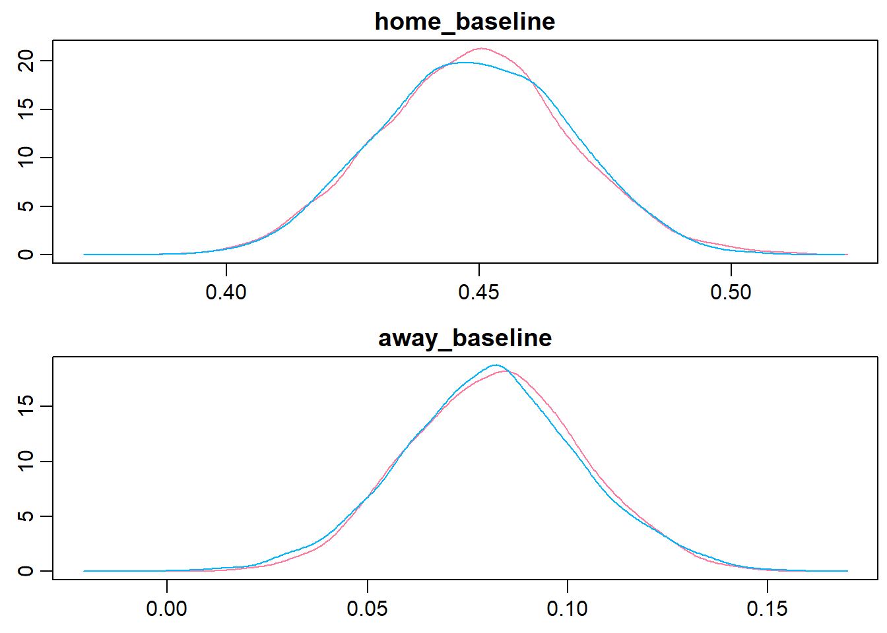
traplot(m2.r2jags, parms = team_par, style = "plain", main = c("home_baseline","away_baseline"))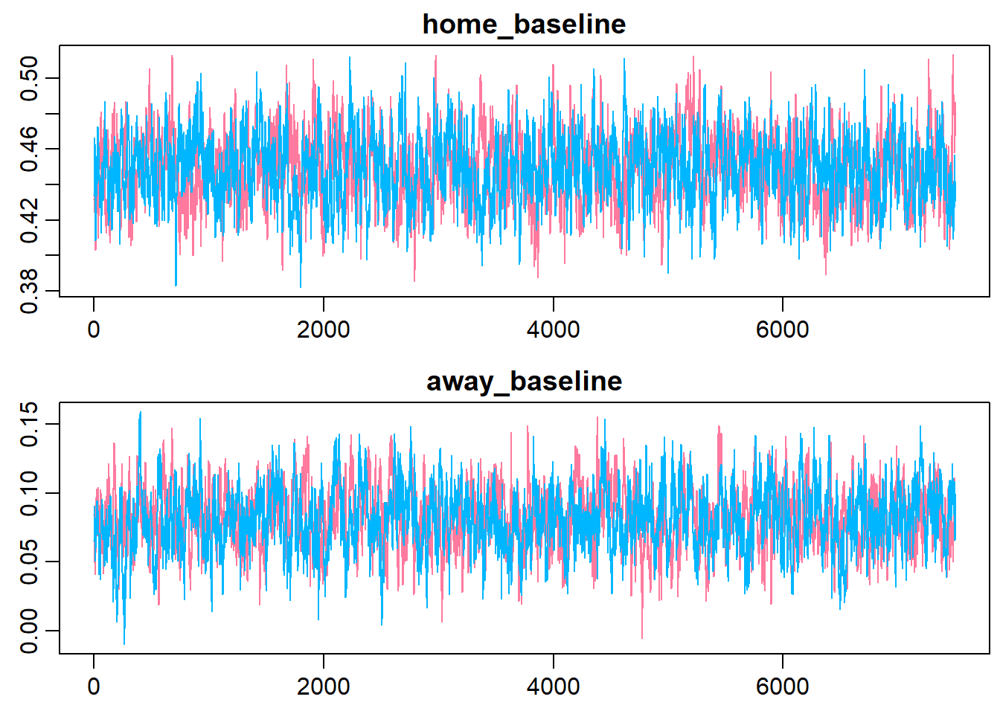
Model validation
Looking at the difference between exp(home_baseline) and exp(away_baseline) shows that the home advantage is realised as roughly \(0.5\) more goals for the home team.
ms2<-as.matrix(m2.r2jags$BUGSoutput$sims.matrix)
plotPost(exp(ms2[, "home_baseline"]) - exp(ms2[, "away_baseline"]), compVal = 0,
xlab = "Home advantage in number of goals")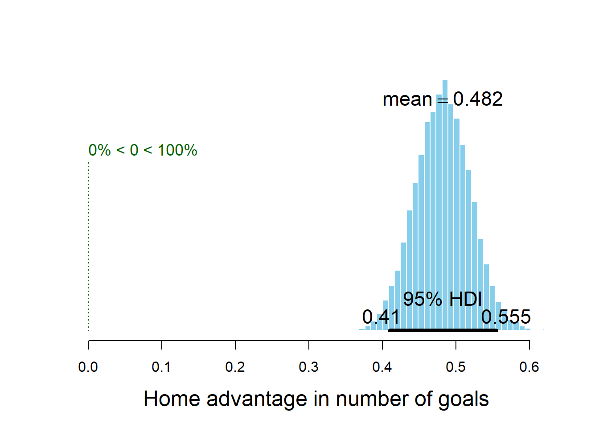
NA mean median mode hdiMass
NA Home advantage in number of goals 0.4822046 0.4822645 0.4831489 0.95
NA hdiLow hdiHigh compVal pcGTcompVal
NA Home advantage in number of goals 0.4096975 0.5549439 0 1
NA ROPElow ROPEhigh pcInROPE
NA Home advantage in number of goals NA NA NAComparing the DIC of the of the two models also indicates that the new model is better.
dic_m1<-m1.r2jags$BUGSoutput$DIC
dic_m2<-m2.r2jags$BUGSoutput$DIC
diff_dic<-dic_m1 - dic_m2
diff_dicNA [1] 168.7556Finally we’ll look at the simulated results for Valencia (home team) vs Sevilla (away team) using the estimates from the new model with the first row of the graph showing the predicted outcome and the second row showing the actual data.
plot_pred_comp2 <- function(home_team, away_team, ms) {
par(mar=c(2,2,2,2))
par(mfrow = c(2, 4))
home_baseline <- ms[, "home_baseline"]
away_baseline <- ms[, "away_baseline"]
home_skill <- ms[, col_name("skill", which(teams == home_team))]
away_skill <- ms[, col_name("skill", which(teams == away_team))]
home_goals <- rpois(nrow(ms), exp(home_baseline + home_skill - away_skill))
away_goals <- rpois(nrow(ms), exp(away_baseline + away_skill - home_skill))
plot_goals(home_goals, away_goals)
home_goals <- d$HomeGoals[d$HomeTeam == home_team & d$AwayTeam == away_team]
away_goals <- d$AwayGoals[d$HomeTeam == home_team & d$AwayTeam == away_team]
plot_goals(home_goals, away_goals)
}
plot_pred_comp2("FC Valencia", "FC Sevilla", ms2)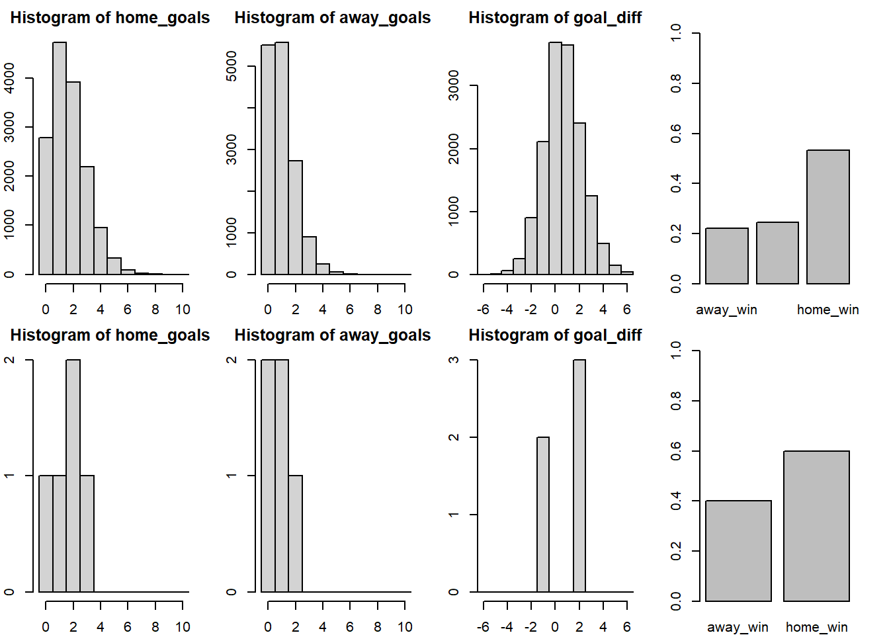
And similarly Sevilla (home team) vs Valencia (away team).
plot_pred_comp2("FC Sevilla", "FC Valencia", ms2)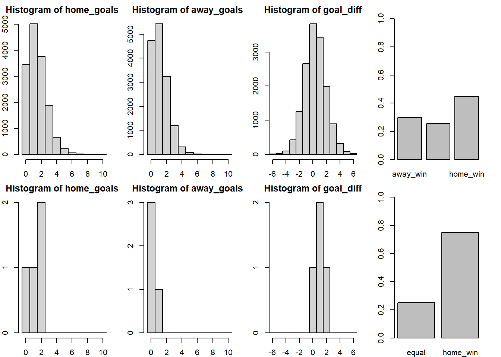
Now the results are closer to the historical data as both Sevilla and Valencia are more likely to win when playing as the home team. At this point in the modeling process I decided to try to split the skill parameter into two components, offence skill and defense skill, thinking that some teams might be good at scoring goals but at the same time be bad at keeping the opponent from scoring. This didn’t seem to result in any better fit however, perhaps because the offensive and defensive skill of a team tend to be highly related. There is however one more thing I would like to change with the model.
Allowing for skill variation over the season
The data set laliga contains data from five different seasons and an assumption of the current model is that a team has the same skill during all seasons. This is probably not a realistic assumption, teams probably differ in their year-to-year performance. And what more, some teams do not even participate in all seasons in the laliga data set, as a result of dropping out of the first division, as the following diagram shows:
Data check
qplot(Season, HomeTeam, data = d, ylab = "Team", xlab = "Particicipation by Season") + theme_classic()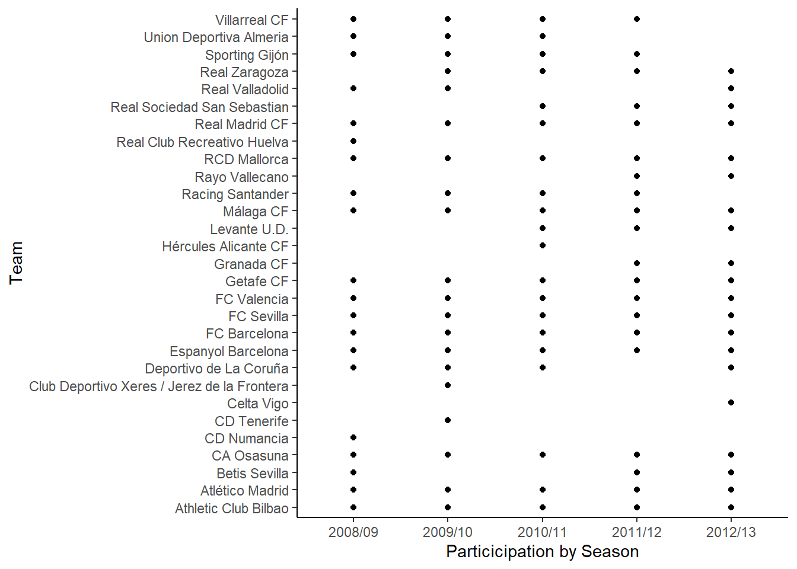
The second iteration of the model was therefore modified to include the year-to-year variability in team skill. This was done by allowing each team to have one skill parameter per season but to connect the skill parameters by using a team’s skill parameter for season \(t\) in the prior distribution for that team’s skill parameter for season \(t+1\) so that
\[ \text{skill}_{t+1} \sim N(\text{skill}_t,\sigma^2_{\text{season}}) \]
for all different \(t\), except the first season which is given a vague prior. Here \(\sigma^2_{\text{season}}\) is a parameter estimated using the whole data set. The home and away baselines are given the same kind of priors and below is the resulting JAGS model.
# model 3
m3_string <- "model {
for(i in 1:n_games) {
HomeGoals[i] ~ dpois(lambda_home[Season[i], HomeTeam[i],AwayTeam[i]])
AwayGoals[i] ~ dpois(lambda_away[Season[i], HomeTeam[i],AwayTeam[i]])
}
for(season_i in 1:n_seasons) {
for(home_i in 1:n_teams) {
for(away_i in 1:n_teams) {
lambda_home[season_i, home_i, away_i] <- exp( home_baseline[season_i] + skill[season_i, home_i] - skill[season_i, away_i])
lambda_away[season_i, home_i, away_i] <- exp( away_baseline[season_i] + skill[season_i, away_i] - skill[season_i, home_i])
}
}
}
skill[1, 1] <- 0
for(j in 2:n_teams) {
skill[1, j] ~ dnorm(group_skill, group_tau)
}
group_skill ~ dnorm(0, 0.0625)
group_tau <- 1/pow(group_sigma, 2)
group_sigma ~ dunif(0, 3)
home_baseline[1] ~ dnorm(0, 0.0625)
away_baseline[1] ~ dnorm(0, 0.0625)
for(season_i in 2:n_seasons) {
skill[season_i, 1] <- 0
for(j in 2:n_teams) {
skill[season_i, j] ~ dnorm(skill[season_i - 1, j], season_tau)
}
home_baseline[season_i] ~ dnorm(home_baseline[season_i - 1], season_tau)
away_baseline[season_i] ~ dnorm(away_baseline[season_i - 1], season_tau)
}
season_tau <- 1/pow(season_sigma, 2)
season_sigma ~ dunif(0, 3)
}
"
## write the model to a text file
writeLines(m3_string, con = "model3.txt")And now re-fit the model. These changes to the model unfortunately introduce quite a lot of autocorrelation when running the MCMC sampler. Also, I re-define the data list to include information for the season parameters.
data_list_m3 <- list(HomeGoals = d$HomeGoals, AwayGoals = d$AwayGoals, HomeTeam = as.numeric(factor(d$HomeTeam,
levels = teams)), AwayTeam = as.numeric(factor(d$AwayTeam, levels = teams)),
Season = as.numeric(factor(d$Season, levels = seasons)), n_teams = length(teams),
n_games = nrow(d), n_seasons = length(seasons))
params <- c("home_baseline", "away_baseline", "skill", "season_sigma", "group_sigma", "group_skill")
nChains = 2
burnInSteps = 3000
thinSteps = 1
numSavedSteps = 15000 #across all chains
nIter = ceiling(burnInSteps + (numSavedSteps * thinSteps)/nChains)
m3.r2jags <- jags(data = data_list_m3, inits = NULL, parameters.to.save = params,
model.file = "model3.txt", n.chains = nChains, n.iter = nIter,
n.burnin = burnInSteps, n.thin = thinSteps)NA Compiling model graph
NA Resolving undeclared variables
NA Allocating nodes
NA Graph information:
NA Observed stochastic nodes: 3700
NA Unobserved stochastic nodes: 153
NA Total graph size: 26525
NA
NA Initializing modelprint(m3.r2jags)NA Inference for Bugs model at "model3.txt", fit using jags,
NA 2 chains, each with 10500 iterations (first 3000 discarded)
NA n.sims = 15000 iterations saved
NA mu.vect sd.vect 2.5% 25% 50% 75%
NA away_baseline[1] 0.105 0.038 0.030 0.079 0.103 0.130
NA away_baseline[2] 0.078 0.030 0.018 0.059 0.079 0.099
NA away_baseline[3] 0.067 0.031 0.005 0.047 0.069 0.089
NA away_baseline[4] 0.064 0.032 -0.001 0.043 0.065 0.087
NA away_baseline[5] 0.079 0.035 0.011 0.056 0.080 0.101
NA group_sigma 0.217 0.035 0.158 0.193 0.214 0.238
NA group_skill 0.018 0.060 -0.090 -0.023 0.015 0.057
NA home_baseline[1] 0.447 0.029 0.392 0.428 0.446 0.466
NA home_baseline[2] 0.437 0.026 0.383 0.421 0.438 0.454
NA home_baseline[3] 0.443 0.026 0.389 0.427 0.443 0.459
NA home_baseline[4] 0.452 0.027 0.400 0.434 0.451 0.469
NA home_baseline[5] 0.454 0.031 0.394 0.434 0.452 0.474
NA season_sigma 0.033 0.019 0.001 0.016 0.032 0.048
NA skill[1,1] 0.000 0.000 0.000 0.000 0.000 0.000
NA skill[2,1] 0.000 0.000 0.000 0.000 0.000 0.000
NA skill[3,1] 0.000 0.000 0.000 0.000 0.000 0.000
NA skill[4,1] 0.000 0.000 0.000 0.000 0.000 0.000
NA skill[5,1] 0.000 0.000 0.000 0.000 0.000 0.000
NA skill[1,2] 0.178 0.067 0.047 0.136 0.175 0.218
NA skill[2,2] 0.169 0.065 0.039 0.129 0.167 0.207
NA skill[3,2] 0.181 0.064 0.061 0.139 0.177 0.219
NA skill[4,2] 0.195 0.065 0.076 0.148 0.189 0.235
NA skill[5,2] 0.216 0.075 0.090 0.161 0.209 0.265
NA skill[1,3] 0.015 0.074 -0.126 -0.033 0.013 0.060
NA skill[2,3] 0.017 0.075 -0.127 -0.030 0.014 0.063
NA skill[3,3] 0.020 0.074 -0.121 -0.027 0.017 0.066
NA skill[4,3] 0.022 0.071 -0.111 -0.024 0.018 0.066
NA skill[5,3] 0.027 0.075 -0.111 -0.021 0.023 0.074
NA skill[1,4] -0.008 0.066 -0.122 -0.053 -0.012 0.035
NA skill[2,4] -0.011 0.063 -0.118 -0.053 -0.015 0.031
NA skill[3,4] -0.010 0.063 -0.120 -0.052 -0.015 0.031
NA skill[4,4] -0.020 0.065 -0.136 -0.064 -0.024 0.022
NA skill[5,4] -0.022 0.069 -0.151 -0.069 -0.025 0.023
NA skill[1,5] -0.174 0.098 -0.370 -0.238 -0.173 -0.107
NA skill[2,5] -0.174 0.104 -0.384 -0.242 -0.174 -0.104
NA skill[3,5] -0.174 0.111 -0.394 -0.247 -0.174 -0.102
NA skill[4,5] -0.174 0.117 -0.408 -0.251 -0.174 -0.098
NA skill[5,5] -0.174 0.123 -0.420 -0.254 -0.175 -0.095
NA skill[1,6] -0.034 0.074 -0.161 -0.085 -0.039 0.017
NA skill[2,6] -0.048 0.068 -0.167 -0.096 -0.052 -0.004
NA skill[3,6] -0.058 0.067 -0.176 -0.106 -0.060 -0.015
NA skill[4,6] -0.065 0.072 -0.193 -0.117 -0.067 -0.019
NA skill[5,6] -0.071 0.075 -0.207 -0.125 -0.072 -0.025
NA skill[1,7] -0.006 0.069 -0.124 -0.054 -0.013 0.038
NA skill[2,7] -0.014 0.065 -0.129 -0.058 -0.021 0.027
NA skill[3,7] -0.009 0.064 -0.120 -0.054 -0.016 0.031
NA skill[4,7] -0.006 0.066 -0.117 -0.052 -0.013 0.035
NA skill[5,7] -0.001 0.071 -0.122 -0.051 -0.009 0.044
NA skill[1,8] 0.200 0.067 0.069 0.155 0.198 0.242
NA skill[2,8] 0.206 0.063 0.086 0.162 0.203 0.246
NA skill[3,8] 0.209 0.063 0.090 0.164 0.206 0.250
NA skill[4,8] 0.204 0.064 0.082 0.158 0.202 0.244
NA skill[5,8] 0.195 0.069 0.059 0.151 0.194 0.239
NA skill[1,9] -0.055 0.073 -0.193 -0.102 -0.057 -0.005
NA skill[2,9] -0.074 0.068 -0.203 -0.119 -0.077 -0.026
NA skill[3,9] -0.087 0.068 -0.219 -0.133 -0.088 -0.040
NA skill[4,9] -0.105 0.074 -0.254 -0.155 -0.101 -0.057
NA skill[5,9] -0.105 0.083 -0.279 -0.159 -0.100 -0.049
NA skill[1,10] -0.121 0.072 -0.246 -0.175 -0.125 -0.072
NA skill[2,10] -0.109 0.070 -0.224 -0.163 -0.113 -0.061
NA skill[3,10] -0.102 0.071 -0.219 -0.156 -0.106 -0.051
NA skill[4,10] -0.111 0.073 -0.234 -0.168 -0.116 -0.060
NA skill[5,10] -0.111 0.083 -0.259 -0.173 -0.116 -0.055
NA skill[1,11] 0.676 0.072 0.526 0.629 0.680 0.726
NA skill[2,11] 0.696 0.063 0.571 0.654 0.699 0.738
NA skill[3,11] 0.712 0.060 0.600 0.672 0.712 0.750
NA skill[4,11] 0.728 0.061 0.617 0.688 0.725 0.761
NA skill[5,11] 0.727 0.064 0.606 0.686 0.725 0.763
NA skill[1,12] 0.146 0.064 0.025 0.106 0.144 0.186
NA skill[2,12] 0.143 0.060 0.028 0.105 0.141 0.180
NA skill[3,12] 0.131 0.058 0.019 0.094 0.130 0.168
NA skill[4,12] 0.127 0.059 0.010 0.089 0.126 0.164
NA skill[5,12] 0.127 0.064 0.002 0.086 0.126 0.166
NA skill[1,13] 0.031 0.065 -0.087 -0.014 0.028 0.071
NA skill[2,13] 0.035 0.062 -0.077 -0.008 0.032 0.073
NA skill[3,13] 0.023 0.061 -0.091 -0.019 0.020 0.062
NA skill[4,13] 0.017 0.062 -0.101 -0.026 0.015 0.057
NA skill[5,13] 0.015 0.067 -0.117 -0.030 0.014 0.057
NA skill[1,14] 0.028 0.064 -0.095 -0.015 0.025 0.069
NA skill[2,14] 0.027 0.061 -0.091 -0.014 0.024 0.065
NA skill[3,14] 0.030 0.059 -0.085 -0.010 0.027 0.067
NA skill[4,14] 0.046 0.062 -0.067 0.004 0.040 0.085
NA skill[5,14] 0.055 0.068 -0.064 0.008 0.049 0.099
NA skill[1,15] 0.015 0.065 -0.106 -0.029 0.009 0.055
NA skill[2,15] 0.019 0.063 -0.095 -0.024 0.012 0.058
NA skill[3,15] -0.003 0.061 -0.115 -0.043 -0.005 0.034
NA skill[4,15] -0.014 0.062 -0.132 -0.055 -0.015 0.024
NA skill[5,15] -0.037 0.071 -0.182 -0.082 -0.034 0.009
NA skill[1,16] -0.120 0.096 -0.304 -0.187 -0.122 -0.055
NA skill[2,16] -0.121 0.103 -0.319 -0.192 -0.122 -0.051
NA skill[3,16] -0.121 0.109 -0.329 -0.195 -0.121 -0.047
NA skill[4,16] -0.121 0.116 -0.342 -0.197 -0.122 -0.044
NA skill[5,16] -0.120 0.121 -0.357 -0.201 -0.121 -0.041
NA skill[1,17] 0.543 0.083 0.372 0.491 0.544 0.600
NA skill[2,17] 0.588 0.067 0.470 0.541 0.586 0.631
NA skill[3,17] 0.621 0.068 0.495 0.575 0.617 0.666
NA skill[4,17] 0.646 0.075 0.501 0.593 0.644 0.697
NA skill[5,17] 0.640 0.077 0.497 0.586 0.637 0.694
NA skill[1,18] -0.068 0.075 -0.209 -0.122 -0.069 -0.021
NA skill[2,18] -0.075 0.074 -0.219 -0.126 -0.075 -0.029
NA skill[3,18] -0.068 0.078 -0.218 -0.122 -0.067 -0.019
NA skill[4,18] -0.061 0.081 -0.217 -0.117 -0.060 -0.011
NA skill[5,18] -0.054 0.081 -0.208 -0.110 -0.054 -0.002
NA skill[1,19] -0.099 0.066 -0.220 -0.144 -0.101 -0.057
NA skill[2,19] -0.106 0.065 -0.227 -0.151 -0.108 -0.064
NA skill[3,19] -0.122 0.070 -0.260 -0.170 -0.121 -0.074
NA skill[4,19] -0.122 0.080 -0.290 -0.174 -0.119 -0.069
NA skill[5,19] -0.122 0.089 -0.312 -0.176 -0.118 -0.065
NA skill[1,20] 0.086 0.068 -0.034 0.038 0.083 0.130
NA skill[2,20] 0.083 0.065 -0.031 0.036 0.079 0.126
NA skill[3,20] 0.082 0.065 -0.033 0.034 0.078 0.125
NA skill[4,20] 0.065 0.070 -0.068 0.017 0.063 0.110
NA skill[5,20] 0.065 0.079 -0.094 0.014 0.064 0.115
NA skill[1,21] -0.097 0.081 -0.245 -0.154 -0.103 -0.042
NA skill[2,21] -0.101 0.073 -0.234 -0.152 -0.104 -0.048
NA skill[3,21] -0.100 0.071 -0.230 -0.149 -0.103 -0.050
NA skill[4,21] -0.107 0.070 -0.237 -0.155 -0.110 -0.059
NA skill[5,21] -0.108 0.074 -0.245 -0.158 -0.114 -0.058
NA skill[1,22] -0.197 0.106 -0.391 -0.269 -0.198 -0.126
NA skill[2,22] -0.204 0.100 -0.389 -0.272 -0.205 -0.138
NA skill[3,22] -0.204 0.107 -0.401 -0.278 -0.204 -0.134
NA skill[4,22] -0.205 0.114 -0.418 -0.282 -0.205 -0.131
NA skill[5,22] -0.205 0.120 -0.432 -0.287 -0.206 -0.127
NA skill[1,23] -0.158 0.099 -0.343 -0.228 -0.160 -0.092
NA skill[2,23] -0.164 0.094 -0.340 -0.232 -0.165 -0.102
NA skill[3,23] -0.163 0.102 -0.357 -0.235 -0.165 -0.097
NA skill[4,23] -0.164 0.108 -0.373 -0.239 -0.165 -0.094
NA skill[5,23] -0.164 0.114 -0.386 -0.241 -0.165 -0.092
NA skill[1,24] -0.102 0.105 -0.310 -0.171 -0.105 -0.033
NA skill[2,24] -0.107 0.102 -0.306 -0.174 -0.108 -0.041
NA skill[3,24] -0.112 0.097 -0.301 -0.177 -0.112 -0.049
NA skill[4,24] -0.112 0.104 -0.317 -0.181 -0.113 -0.044
NA skill[5,24] -0.112 0.111 -0.329 -0.185 -0.112 -0.041
NA skill[1,25] 0.009 0.086 -0.149 -0.046 0.007 0.066
NA skill[2,25] 0.009 0.081 -0.145 -0.044 0.006 0.061
NA skill[3,25] 0.008 0.074 -0.140 -0.042 0.006 0.055
NA skill[4,25] 0.013 0.074 -0.139 -0.038 0.011 0.060
NA skill[5,25] 0.003 0.077 -0.143 -0.047 0.001 0.053
NA skill[1,26] 0.048 0.088 -0.117 -0.019 0.046 0.108
NA skill[2,26] 0.049 0.083 -0.104 -0.013 0.047 0.104
NA skill[3,26] 0.049 0.076 -0.083 -0.009 0.047 0.099
NA skill[4,26] 0.068 0.075 -0.063 0.014 0.066 0.118
NA skill[5,26] 0.091 0.082 -0.057 0.034 0.091 0.145
NA skill[1,27] -0.051 0.093 -0.236 -0.108 -0.049 0.000
NA skill[2,27] -0.054 0.088 -0.231 -0.108 -0.050 -0.003
NA skill[3,27] -0.055 0.084 -0.224 -0.108 -0.052 -0.006
NA skill[4,27] -0.057 0.077 -0.213 -0.107 -0.054 -0.012
NA skill[5,27] -0.053 0.079 -0.211 -0.104 -0.051 -0.007
NA skill[1,28] -0.110 0.099 -0.292 -0.188 -0.112 -0.039
NA skill[2,28] -0.113 0.094 -0.288 -0.188 -0.115 -0.046
NA skill[3,28] -0.117 0.088 -0.282 -0.186 -0.120 -0.052
NA skill[4,28] -0.121 0.081 -0.274 -0.186 -0.123 -0.063
NA skill[5,28] -0.124 0.082 -0.278 -0.188 -0.127 -0.066
NA skill[1,29] -0.057 0.129 -0.272 -0.154 -0.066 0.028
NA skill[2,29] -0.059 0.127 -0.270 -0.155 -0.067 0.022
NA skill[3,29] -0.061 0.124 -0.268 -0.154 -0.068 0.019
NA skill[4,29] -0.062 0.121 -0.268 -0.152 -0.069 0.014
NA skill[5,29] -0.063 0.117 -0.267 -0.149 -0.068 0.010
NA deviance 10731.636 11.981 10708.084 10723.239 10732.002 10740.556
NA 97.5% Rhat n.eff
NA away_baseline[1] 0.185 1.056 34
NA away_baseline[2] 0.135 1.004 500
NA away_baseline[3] 0.123 1.001 7800
NA away_baseline[4] 0.121 1.001 3300
NA away_baseline[5] 0.148 1.006 280
NA group_sigma 0.297 1.008 210
NA group_skill 0.146 1.015 5000
NA home_baseline[1] 0.508 1.018 260
NA home_baseline[2] 0.487 1.005 15000
NA home_baseline[3] 0.493 1.004 15000
NA home_baseline[4] 0.506 1.007 390
NA home_baseline[5] 0.516 1.011 260
NA season_sigma 0.069 1.323 11
NA skill[1,1] 0.000 1.000 1
NA skill[2,1] 0.000 1.000 1
NA skill[3,1] 0.000 1.000 1
NA skill[4,1] 0.000 1.000 1
NA skill[5,1] 0.000 1.000 1
NA skill[1,2] 0.323 1.003 5900
NA skill[2,2] 0.315 1.003 15000
NA skill[3,2] 0.323 1.008 880
NA skill[4,2] 0.338 1.012 290
NA skill[5,2] 0.377 1.016 130
NA skill[1,3] 0.170 1.017 110
NA skill[2,3] 0.174 1.014 150
NA skill[3,3] 0.175 1.013 180
NA skill[4,3] 0.173 1.011 250
NA skill[5,3] 0.185 1.004 470
NA skill[1,4] 0.130 1.005 510
NA skill[2,4] 0.121 1.004 680
NA skill[3,4] 0.123 1.006 380
NA skill[4,4] 0.117 1.003 820
NA skill[5,4] 0.121 1.002 1200
NA skill[1,5] 0.015 1.002 1400
NA skill[2,5] 0.033 1.002 1500
NA skill[3,5] 0.046 1.002 1800
NA skill[4,5] 0.060 1.002 2000
NA skill[5,5] 0.074 1.002 1900
NA skill[1,6] 0.116 1.008 620
NA skill[2,6] 0.092 1.010 15000
NA skill[3,6] 0.084 1.012 3500
NA skill[4,6] 0.085 1.011 1200
NA skill[5,6] 0.086 1.012 710
NA skill[1,7] 0.145 1.005 11000
NA skill[2,7] 0.133 1.011 15000
NA skill[3,7] 0.134 1.015 15000
NA skill[4,7] 0.142 1.012 15000
NA skill[5,7] 0.154 1.007 15000
NA skill[1,8] 0.337 1.001 15000
NA skill[2,8] 0.339 1.003 15000
NA skill[3,8] 0.341 1.001 6700
NA skill[4,8] 0.340 1.003 15000
NA skill[5,8] 0.338 1.003 1400
NA skill[1,9] 0.090 1.019 140
NA skill[2,9] 0.059 1.010 520
NA skill[3,9] 0.046 1.007 13000
NA skill[4,9] 0.035 1.004 790
NA skill[5,9] 0.047 1.003 790
NA skill[1,10] 0.027 1.011 150
NA skill[2,10] 0.032 1.016 110
NA skill[3,10] 0.040 1.021 98
NA skill[4,10] 0.037 1.011 170
NA skill[5,10] 0.057 1.008 200
NA skill[1,11] 0.815 1.035 59
NA skill[2,11] 0.825 1.019 110
NA skill[3,11] 0.839 1.006 320
NA skill[4,11] 0.860 1.002 1100
NA skill[5,11] 0.866 1.002 1000
NA skill[1,12] 0.279 1.002 1900
NA skill[2,12] 0.267 1.002 1300
NA skill[3,12] 0.247 1.009 300
NA skill[4,12] 0.244 1.012 190
NA skill[5,12] 0.255 1.006 280
NA skill[1,13] 0.168 1.002 4300
NA skill[2,13] 0.167 1.004 15000
NA skill[3,13] 0.153 1.009 350
NA skill[4,13] 0.148 1.014 170
NA skill[5,13] 0.152 1.012 210
NA skill[1,14] 0.159 1.007 240
NA skill[2,14] 0.153 1.007 240
NA skill[3,14] 0.156 1.006 410
NA skill[4,14] 0.176 1.001 15000
NA skill[5,14] 0.202 1.002 1400
NA skill[1,15] 0.155 1.001 4000
NA skill[2,15] 0.154 1.001 4000
NA skill[3,15] 0.122 1.008 210
NA skill[4,15] 0.113 1.013 130
NA skill[5,15] 0.100 1.030 58
NA skill[1,16] 0.071 1.004 970
NA skill[2,16] 0.084 1.002 1200
NA skill[3,16] 0.095 1.002 1000
NA skill[4,16] 0.108 1.002 970
NA skill[5,16] 0.121 1.002 1000
NA skill[1,17] 0.704 1.009 190
NA skill[2,17] 0.721 1.002 15000
NA skill[3,17] 0.759 1.023 100
NA skill[4,17] 0.800 1.049 48
NA skill[5,17] 0.796 1.039 58
NA skill[1,18] 0.086 1.011 160
NA skill[2,18] 0.077 1.008 220
NA skill[3,18] 0.089 1.010 170
NA skill[4,18] 0.099 1.011 160
NA skill[5,18] 0.108 1.014 120
NA skill[1,19] 0.039 1.013 130
NA skill[2,19] 0.028 1.016 100
NA skill[3,19] 0.017 1.028 62
NA skill[4,19] 0.036 1.020 83
NA skill[5,19] 0.054 1.017 98
NA skill[1,20] 0.229 1.006 280
NA skill[2,20] 0.221 1.006 300
NA skill[3,20] 0.220 1.004 510
NA skill[4,20] 0.207 1.001 15000
NA skill[5,20] 0.223 1.001 15000
NA skill[1,21] 0.063 1.006 320
NA skill[2,21] 0.043 1.005 390
NA skill[3,21] 0.042 1.007 240
NA skill[4,21] 0.037 1.007 250
NA skill[5,21] 0.044 1.009 190
NA skill[1,22] 0.014 1.011 150
NA skill[2,22] -0.001 1.012 160
NA skill[3,22] 0.010 1.010 180
NA skill[4,22] 0.026 1.008 220
NA skill[5,22] 0.038 1.006 270
NA skill[1,23] 0.043 1.003 710
NA skill[2,23] 0.026 1.002 1200
NA skill[3,23] 0.042 1.002 1900
NA skill[4,23] 0.054 1.001 2600
NA skill[5,23] 0.070 1.002 2300
NA skill[1,24] 0.109 1.001 15000
NA skill[2,24] 0.096 1.001 5000
NA skill[3,24] 0.085 1.001 2700
NA skill[4,24] 0.098 1.001 3600
NA skill[5,24] 0.109 1.002 3300
NA skill[1,25] 0.186 1.021 480
NA skill[2,25] 0.174 1.030 410
NA skill[3,25] 0.163 1.041 410
NA skill[4,25] 0.169 1.041 230
NA skill[5,25] 0.162 1.023 310
NA skill[1,26] 0.228 1.010 240
NA skill[2,26] 0.220 1.015 170
NA skill[3,26] 0.203 1.026 120
NA skill[4,26] 0.224 1.052 49
NA skill[5,26] 0.257 1.078 31
NA skill[1,27] 0.143 1.001 3900
NA skill[2,27] 0.129 1.001 9900
NA skill[3,27] 0.118 1.001 15000
NA skill[4,27] 0.103 1.002 1600
NA skill[5,27] 0.112 1.001 3800
NA skill[1,28] 0.087 1.003 720
NA skill[2,28] 0.068 1.004 470
NA skill[3,28] 0.052 1.006 310
NA skill[4,28] 0.035 1.009 190
NA skill[5,28] 0.035 1.012 140
NA skill[1,29] 0.235 1.058 160
NA skill[2,29] 0.230 1.061 160
NA skill[3,29] 0.224 1.068 150
NA skill[4,29] 0.215 1.076 130
NA skill[5,29] 0.204 1.085 110
NA deviance 10752.921 1.060 31
NA
NA For each parameter, n.eff is a crude measure of effective sample size,
NA and Rhat is the potential scale reduction factor (at convergence, Rhat=1).
NA
NA DIC info (using the rule, pD = var(deviance)/2)
NA pD = 69.4 and DIC = 10801.0
NA DIC is an estimate of expected predictive error (lower deviance is better).MCMC diagnostics
The following graph shows the trace plot and distribution of the season_sigma parameter.
denplot(m3.r2jags, parms = "season_sigma", style = "plain")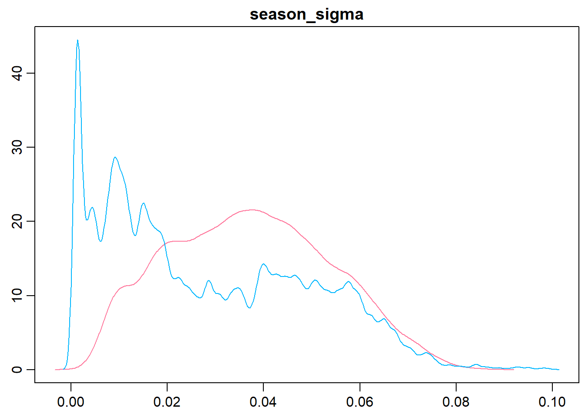
traplot(m3.r2jags, parms = "season_sigma", style = "plain")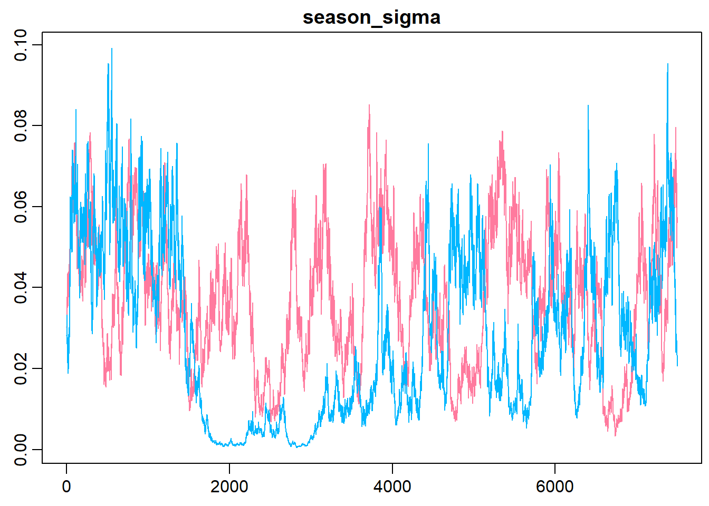
Calculating and comparing the DIC of this model with the former model show no substantial difference.
dic_m2<-m2.r2jags$BUGSoutput$DIC
dic_m3<-m3.r2jags$BUGSoutput$DIC
diff_dic<-dic_m2 - dic_m3
diff_dicNA [1] -29.50679However, I believe the assumptions of the current model (m3) are more reasonable so I’ll stick with this model.
Ranking the teams of La Liga
We’ll start by ranking the teams of La Liga using the estimated skill parameters from the 2012/2013 season. The values of the skill parameters are difficult to interpret as they are relative to the skill of the team that had its skill parameter “anchored” at zero. To put them on a more interpretable scale I’ll first zero center the skill parameters by subtracting the mean skill of all teams, I then add the home baseline and exponentiate the resulting values. These rescaled skill parameters are now on the scale of expected number of goals when playing home team. Below is a caterpillar plot of the median of the rescaled skill parameters together with the \(68\)% and \(95\)% credible intervals. The plot is ordered according to the median skill and thus also gives the ranking of the teams.
# The ranking of the teams for the 2012/13 season.
ms3<-m3.r2jags$BUGSoutput$sims.matrix
team_skill <- ms3[, str_detect(string = colnames(ms3), "skill\\[5,")]
team_skill <- (team_skill - rowMeans(team_skill)) + ms3[, "home_baseline[5]"]
team_skill <- exp(team_skill)
colnames(team_skill) <- teams
team_skill <- team_skill[, order(colMeans(team_skill), decreasing = T)]
par(mar = c(2, 0.7, 0.7, 0.7), xaxs = "i")
caterplot(team_skill, labels.loc = "above", val.lim = c(0.7, 3.8), style = "plain")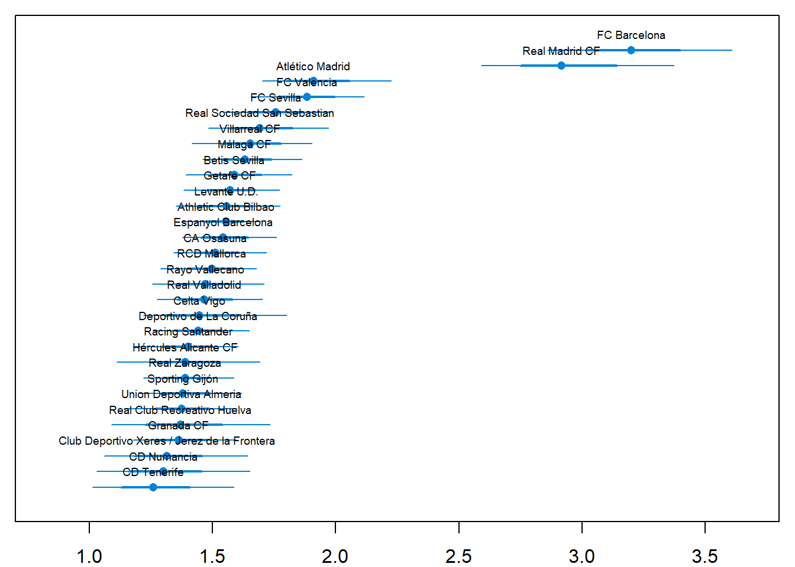
Two teams are clearly ahead of the rest, FC Barcelona and Real Madrid CF. Let’s look at the credible difference between the two teams.
plotPost(team_skill[, "FC Barcelona"] - team_skill[, "Real Madrid CF"], compVal = 0,
xlab = "← Real Madrid vs Barcelona →")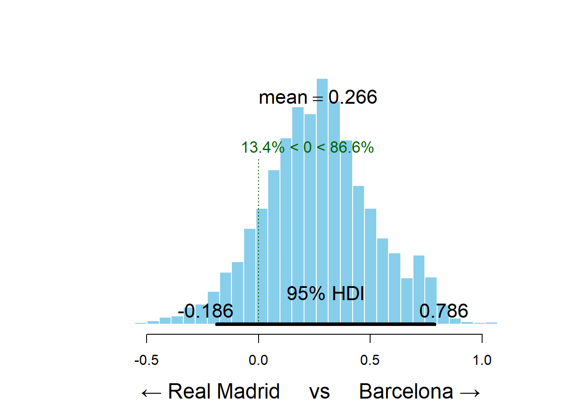
NA mean median mode hdiMass
NA ← Real Madrid vs Barcelona → 0.26639 0.2657129 0.2950102 0.95
NA hdiLow hdiHigh compVal pcGTcompVal
NA ← Real Madrid vs Barcelona → -0.1863186 0.785901 0 0.8660667
NA ROPElow ROPEhigh pcInROPE
NA ← Real Madrid vs Barcelona → NA NA NAFC Barcelona is the better team with a probability of \(82\)%
Predicting the End Game of La Liga 2012/2013
In the laliga data set the results of the \(50\) last games of the 2012/2013 season was missing. Using our model we can now both predict and simulate the outcomes of these \(50\) games. The R code below calculates a number of measures for each game (both the games with known and unknown outcomes):
The mode of the simulated number of goals, that is, the most likely number of scored goals. If we were asked to bet on the number of goals in a game this is what we would use.
The mean of the simulated number of goals, this is our best guess of the average number of goals in a game.
The most likely match result for each game.
A random sample from the distributions of credible home scores, away scores and match results. This is how La Liga actually could have played out in an alternative reality.
n <- nrow(ms3)
m3_pred <- sapply(1:nrow(laliga), function(i) {
home_team <- which(teams == laliga$HomeTeam[i])
away_team <- which(teams == laliga$AwayTeam[i])
season <- which(seasons == laliga$Season[i])
home_skill <- ms3[, col_name("skill", season, home_team)]
away_skill <- ms3[, col_name("skill", season, away_team)]
home_baseline <- ms3[, col_name("home_baseline", season)]
away_baseline <- ms3[, col_name("away_baseline", season)]
home_goals <- rpois(n, exp(home_baseline + home_skill - away_skill))
away_goals <- rpois(n, exp(away_baseline + away_skill - home_skill))
home_goals_table <- table(home_goals)
away_goals_table <- table(away_goals)
match_results <- sign(home_goals - away_goals)
match_results_table <- table(match_results)
mode_home_goal <- as.numeric(names(home_goals_table)[ which.max(home_goals_table)])
mode_away_goal <- as.numeric(names(away_goals_table)[ which.max(away_goals_table)])
match_result <- as.numeric(names(match_results_table)[which.max(match_results_table)])
rand_i <- sample(seq_along(home_goals), 1)
c(mode_home_goal = mode_home_goal, mode_away_goal = mode_away_goal, match_result = match_result,
mean_home_goal = mean(home_goals), mean_away_goal = mean(away_goals),
rand_home_goal = home_goals[rand_i], rand_away_goal = away_goals[rand_i],
rand_match_result = match_results[rand_i])
})
m3_pred <- t(m3_pred)First let’s compare the distribution of the number of goals in the data with the predicted mode, mean and randomised number of goals for all the games (focusing on the number of goals for the home team). First the actual distribution of the number of goals for the home teams.
hist(laliga$HomeGoals, breaks = (-1:10) + 0.5, xlim = c(-0.5, 10), main = "Distribution of the number of goals\nscored by a home team in a match.", xlab = "")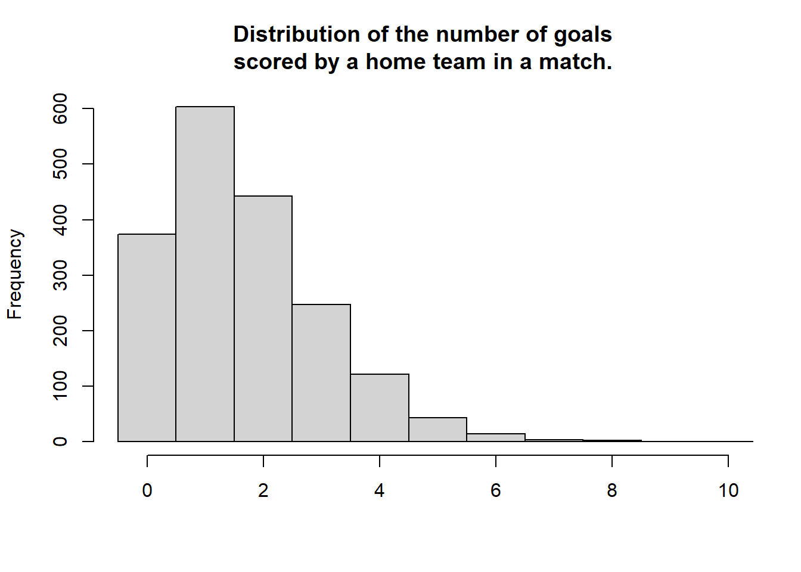
This next plot shows the distribution of the modes from the predicted distribution of home goals from each game. That is, what is the most probable outcome, for the home team, in each game.
hist(m3_pred[, "mode_home_goal"], breaks = (-1:10) + 0.5, xlim = c(-0.5, 10),
main = "Distribution of predicted most\nprobable scoreby a home team in\na match.", xlab = "")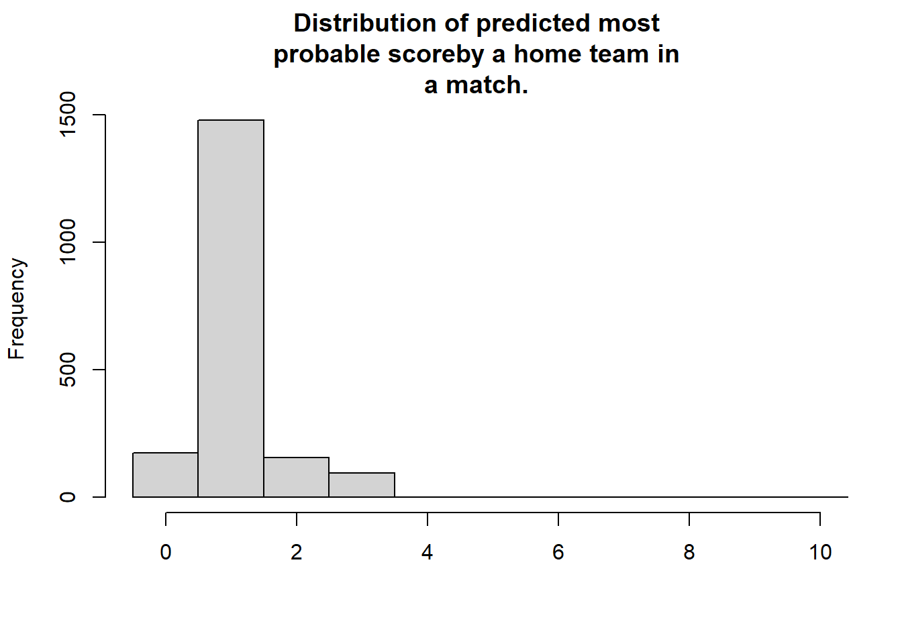
For almost all games the single most likely number of goals is one. Actually, if you know nothing about a La Liga game betting on one goal for the home team is \(78\)% of the times the best bet. Lest instead look at the distribution of the predicted mean number of home goals in each game.
hist(m3_pred[, "mean_home_goal"], breaks = (-1:10) + 0.5, xlim = c(-0.5, 10),
main = "Distribution of predicted mean \n score by a home team in a match.", xlab = "")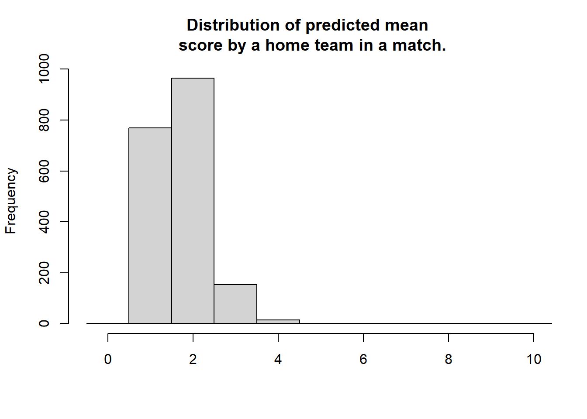
For most games the expected number of goals are \(2\). That is, even if your safest bet is one goal you would expect to see around two goals. The distribution of the mode and the mean number of goals doesn’t look remotely like the actual number of goals. This was not to be expected, we would however expect the distribution of randomized goals (where for each match the number of goals has been randomly drawn from that match’s predicted home goal distribution) to look similar to the actual number of home goals. Looking at the histogram below, this seems to be the case.
hist(m3_pred[, "rand_home_goal"], breaks = (-1:10) + 0.5, xlim = c(-0.5, 10),
main = "Distribution of randomly draw \n score by a home team in a match.", xlab = "")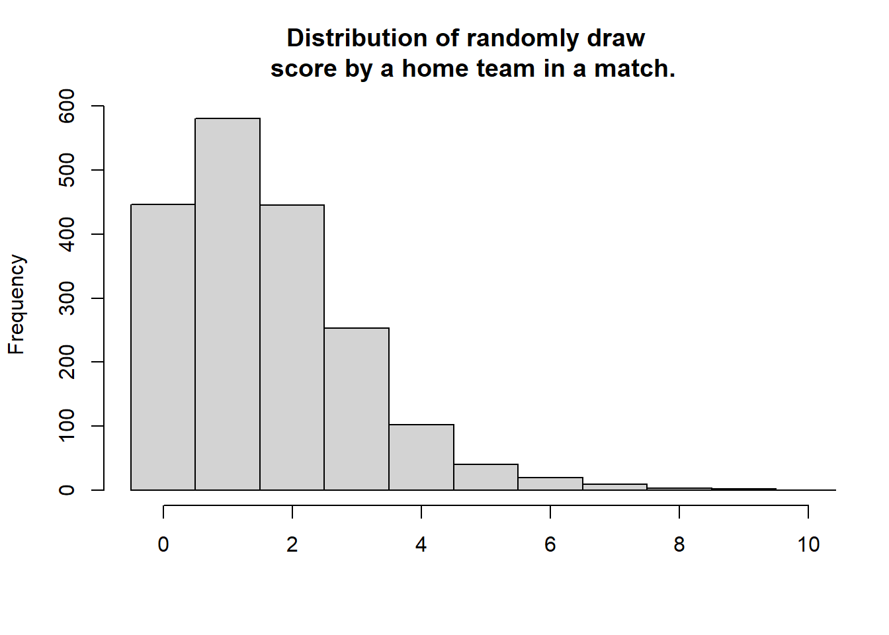
We can also look at how well the model predicts the data. This should probably be done using cross validation, but as the number of effective parameters are much smaller than the number of data points a direct comparison should at least give an estimated prediction accuracy in the right ballpark.
mean(laliga$HomeGoals == m3_pred[, "mode_home_goal"], na.rm = T)NA [1] 0.3318919mean((laliga$HomeGoals - m3_pred[, "mean_home_goal"])^2, na.rm = T)NA [1] 1.457061So on average the model predicts the correct number of home goals \(34\)% of the time and guesses the average number of goals with a mean squared error of \(1.45\). Now we’ll look at the actual and predicted match outcomes. The graph below shows the match outcomes in the data with \(1\) being a home win, \(0\) being a draw and \(-1\) being a win for the away team.
hist(laliga$MatchResult, breaks = (-2:1) + 0.5, main = "Actual match results.", xlab = "")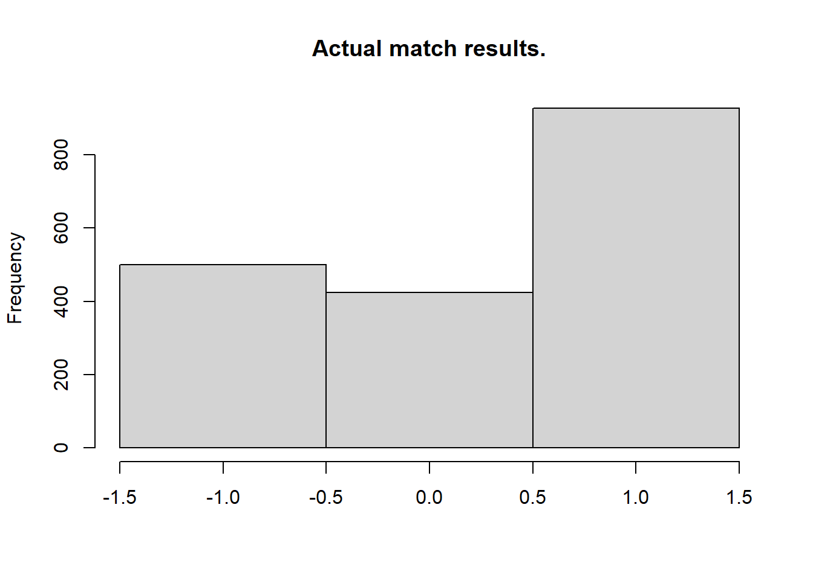
Now looking at the most probable outcomes of the matches according to the model.
hist(m3_pred[, "match_result"], breaks = (-2:1) + 0.5, main = "Predicted match results.", xlab = "")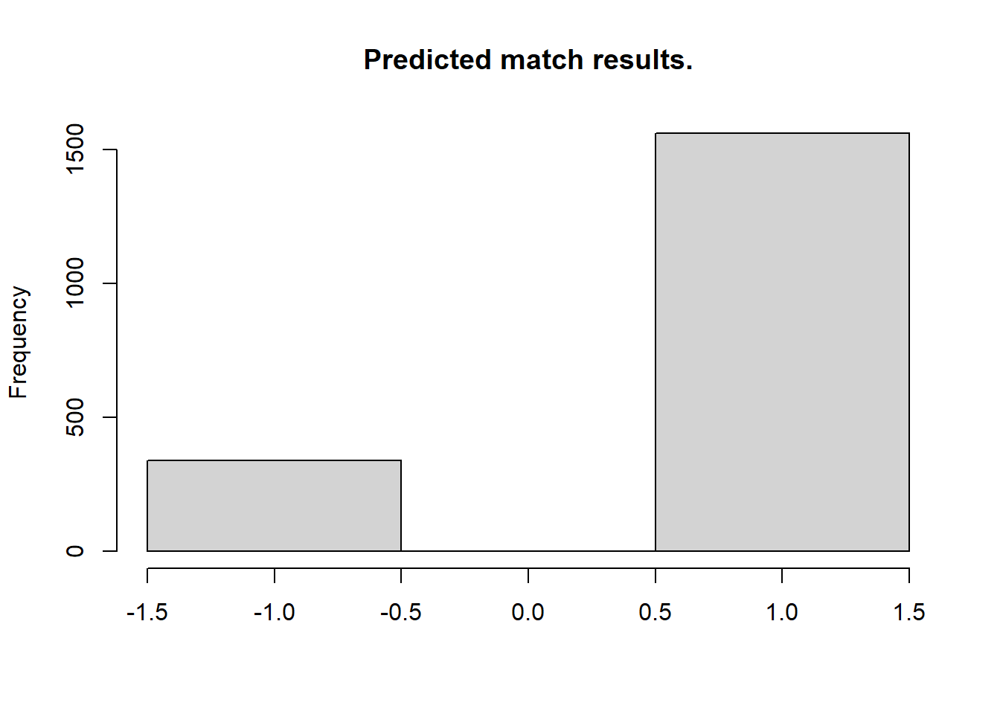
For almost all matches the safest bet is to bet on the home team. While draws are not uncommon it is never the safest bet. As in the case with the number of home goals, the randomized match outcomes have a distribution similar to the actual match outcomes:
hist(m3_pred[, "rand_match_result"], breaks = (-2:1) + 0.5, main = "Randomized match results.", xlab = "")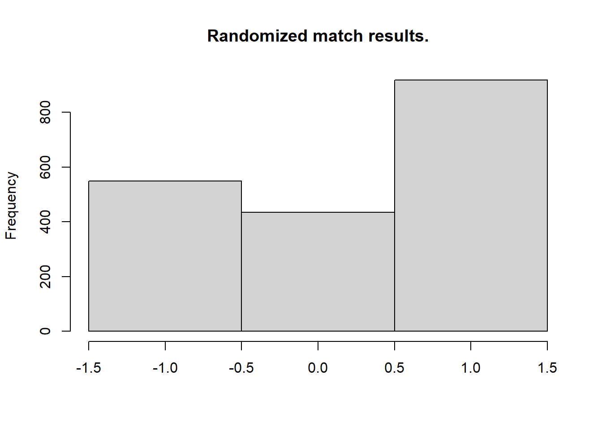
mean(laliga$MatchResult == m3_pred[, "match_result"], na.rm = T)NA [1] 0.5637838The model predicts the correct match outcome \(56\)% of the time. Pretty good! Now that we’ve checked that the model reasonably predicts the La Liga history let’s predict the La Liga endgame! The code below displays the predicted mode and mean number of goals for the endgame and the predicted winner of each game.
laliga_forecast <- laliga[is.na(laliga$HomeGoals), c("Season", "Week", "HomeTeam",
"AwayTeam")]
m3_forecast <- m3_pred[is.na(laliga$HomeGoals), ]
laliga_forecast$mean_home_goals <- round(m3_forecast[, "mean_home_goal"], 1)
laliga_forecast$mean_away_goals <- round(m3_forecast[, "mean_away_goal"], 1)
laliga_forecast$mode_home_goals <- m3_forecast[, "mode_home_goal"]
laliga_forecast$mode_away_goals <- m3_forecast[, "mode_away_goal"]
laliga_forecast$predicted_winner <- ifelse(m3_forecast[, "match_result"] ==
1, laliga_forecast$HomeTeam, ifelse(m3_forecast[, "match_result"] == -1,
laliga_forecast$AwayTeam, "Draw"))
rownames(laliga_forecast) <- NULL
knitr::kable(laliga_forecast, "pandoc", align = "c")| Season | Week | HomeTeam | AwayTeam | mean_home_goals | mean_away_goals | mode_home_goals | mode_away_goals | predicted_winner |
|---|---|---|---|---|---|---|---|---|
| 2012/13 | 34 | Celta Vigo | Athletic Club Bilbao | 1.5 | 1.2 | 1 | 1 | Celta Vigo |
| 2012/13 | 34 | Deportivo de La Coruña | Atlético Madrid | 1.2 | 1.4 | 1 | 1 | Atlético Madrid |
| 2012/13 | 34 | FC Barcelona | Betis Sevilla | 3.2 | 0.5 | 3 | 0 | FC Barcelona |
| 2012/13 | 34 | FC Sevilla | Espanyol Barcelona | 1.8 | 1.0 | 1 | 0 | FC Sevilla |
| 2012/13 | 34 | FC Valencia | CA Osasuna | 2.0 | 0.9 | 2 | 0 | FC Valencia |
| 2012/13 | 34 | Getafe CF | Real Sociedad San Sebastian | 1.5 | 1.2 | 1 | 1 | Getafe CF |
| 2012/13 | 34 | Granada CF | Málaga CF | 1.3 | 1.3 | 1 | 1 | Granada CF |
| 2012/13 | 34 | RCD Mallorca | Levante U.D. | 1.5 | 1.1 | 1 | 1 | RCD Mallorca |
| 2012/13 | 34 | Real Madrid CF | Real Valladolid | 3.2 | 0.5 | 3 | 0 | Real Madrid CF |
| 2012/13 | 34 | Real Zaragoza | Rayo Vallecano | 1.5 | 1.1 | 1 | 1 | Real Zaragoza |
| 2012/13 | 35 | Athletic Club Bilbao | RCD Mallorca | 1.6 | 1.0 | 1 | 1 | Athletic Club Bilbao |
| 2012/13 | 35 | Atlético Madrid | FC Barcelona | 1.0 | 1.8 | 0 | 1 | FC Barcelona |
| 2012/13 | 35 | Betis Sevilla | Celta Vigo | 1.7 | 1.0 | 1 | 1 | Betis Sevilla |
| 2012/13 | 35 | CA Osasuna | Getafe CF | 1.5 | 1.1 | 1 | 1 | CA Osasuna |
| 2012/13 | 35 | Espanyol Barcelona | Real Madrid CF | 0.8 | 2.1 | 0 | 2 | Real Madrid CF |
| 2012/13 | 35 | Levante U.D. | Real Zaragoza | 1.8 | 1.0 | 1 | 0 | Levante U.D. |
| 2012/13 | 35 | Málaga CF | FC Sevilla | 1.5 | 1.2 | 1 | 1 | Málaga CF |
| 2012/13 | 35 | Rayo Vallecano | FC Valencia | 1.2 | 1.4 | 1 | 1 | FC Valencia |
| 2012/13 | 35 | Real Sociedad San Sebastian | Granada CF | 2.0 | 0.9 | 2 | 0 | Real Sociedad San Sebastian |
| 2012/13 | 35 | Real Valladolid | Deportivo de La Coruña | 1.6 | 1.1 | 1 | 1 | Real Valladolid |
| 2012/13 | 36 | Celta Vigo | Atlético Madrid | 1.2 | 1.5 | 1 | 1 | Atlético Madrid |
| 2012/13 | 36 | Deportivo de La Coruña | Espanyol Barcelona | 1.5 | 1.2 | 1 | 1 | Deportivo de La Coruña |
| 2012/13 | 36 | FC Barcelona | Real Valladolid | 3.5 | 0.5 | 3 | 0 | FC Barcelona |
| 2012/13 | 36 | FC Sevilla | Real Sociedad San Sebastian | 1.6 | 1.0 | 1 | 1 | FC Sevilla |
| 2012/13 | 36 | Getafe CF | FC Valencia | 1.3 | 1.3 | 1 | 1 | Getafe CF |
| 2012/13 | 36 | Granada CF | CA Osasuna | 1.4 | 1.2 | 1 | 1 | Granada CF |
| 2012/13 | 36 | Levante U.D. | Rayo Vallecano | 1.7 | 1.0 | 1 | 1 | Levante U.D. |
| 2012/13 | 36 | RCD Mallorca | Betis Sevilla | 1.5 | 1.2 | 1 | 1 | RCD Mallorca |
| 2012/13 | 36 | Real Madrid CF | Málaga CF | 2.9 | 0.6 | 2 | 0 | Real Madrid CF |
| 2012/13 | 36 | Real Zaragoza | Athletic Club Bilbao | 1.4 | 1.2 | 1 | 1 | Real Zaragoza |
| 2012/13 | 37 | Athletic Club Bilbao | Levante U.D. | 1.6 | 1.1 | 1 | 1 | Athletic Club Bilbao |
| 2012/13 | 37 | Atlético Madrid | RCD Mallorca | 2.0 | 0.8 | 1 | 0 | Atlético Madrid |
| 2012/13 | 37 | Betis Sevilla | Real Zaragoza | 1.8 | 1.0 | 1 | 0 | Betis Sevilla |
| 2012/13 | 37 | CA Osasuna | FC Sevilla | 1.4 | 1.3 | 1 | 1 | CA Osasuna |
| 2012/13 | 37 | Espanyol Barcelona | FC Barcelona | 0.8 | 2.3 | 0 | 2 | FC Barcelona |
| 2012/13 | 37 | FC Valencia | Granada CF | 2.2 | 0.8 | 2 | 0 | FC Valencia |
| 2012/13 | 37 | Getafe CF | Rayo Vallecano | 1.7 | 1.0 | 1 | 0 | Getafe CF |
| 2012/13 | 37 | Málaga CF | Deportivo de La Coruña | 1.8 | 0.9 | 1 | 0 | Málaga CF |
| 2012/13 | 37 | Real Sociedad San Sebastian | Real Madrid CF | 0.9 | 1.9 | 0 | 1 | Real Madrid CF |
| 2012/13 | 37 | Real Valladolid | Celta Vigo | 1.6 | 1.1 | 1 | 1 | Real Valladolid |
| 2012/13 | 38 | Celta Vigo | Espanyol Barcelona | 1.5 | 1.2 | 1 | 1 | Celta Vigo |
| 2012/13 | 38 | Deportivo de La Coruña | Real Sociedad San Sebastian | 1.3 | 1.3 | 1 | 1 | Deportivo de La Coruña |
| 2012/13 | 38 | FC Barcelona | Málaga CF | 3.1 | 0.6 | 3 | 0 | FC Barcelona |
| 2012/13 | 38 | FC Sevilla | FC Valencia | 1.5 | 1.2 | 1 | 1 | FC Sevilla |
| 2012/13 | 38 | Granada CF | Getafe CF | 1.4 | 1.2 | 1 | 1 | Granada CF |
| 2012/13 | 38 | Levante U.D. | Betis Sevilla | 1.5 | 1.1 | 1 | 1 | Levante U.D. |
| 2012/13 | 38 | RCD Mallorca | Real Valladolid | 1.6 | 1.1 | 1 | 1 | RCD Mallorca |
| 2012/13 | 38 | Rayo Vallecano | Athletic Club Bilbao | 1.5 | 1.2 | 1 | 1 | Rayo Vallecano |
| 2012/13 | 38 | Real Madrid CF | CA Osasuna | 3.1 | 0.6 | 2 | 0 | Real Madrid CF |
| 2012/13 | 38 | Real Zaragoza | Atlético Madrid | 1.1 | 1.5 | 1 | 1 | Atlético Madrid |
While these predictions are good if you want to bet on the likely winner they do not reflect how the actual endgame will play out, e.g., there is not a single draw in the predicted_winner column. So at last let’s look at a possible version of the La Liga endgame by displaying the simulated match results calculated earlier.
laliga_sim <- laliga[is.na(laliga$HomeGoals), c("Season", "Week", "HomeTeam",
"AwayTeam")]
laliga_sim$home_goals <- m3_forecast[, "rand_home_goal"]
laliga_sim$away_goals <- m3_forecast[, "rand_away_goal"]
laliga_sim$winner <- ifelse(m3_forecast[, "rand_match_result"] == 1, laliga_forecast$HomeTeam,
ifelse(m3_forecast[, "rand_match_result"] == -1, laliga_forecast$AwayTeam,
"Draw"))
rownames(laliga_sim) <- NULL
knitr::kable(laliga_sim, "pandoc", align = "c")| Season | Week | HomeTeam | AwayTeam | home_goals | away_goals | winner |
|---|---|---|---|---|---|---|
| 2012/13 | 34 | Celta Vigo | Athletic Club Bilbao | 0 | 0 | Draw |
| 2012/13 | 34 | Deportivo de La Coruña | Atlético Madrid | 1 | 5 | Atlético Madrid |
| 2012/13 | 34 | FC Barcelona | Betis Sevilla | 5 | 0 | FC Barcelona |
| 2012/13 | 34 | FC Sevilla | Espanyol Barcelona | 1 | 0 | FC Sevilla |
| 2012/13 | 34 | FC Valencia | CA Osasuna | 1 | 2 | CA Osasuna |
| 2012/13 | 34 | Getafe CF | Real Sociedad San Sebastian | 1 | 0 | Getafe CF |
| 2012/13 | 34 | Granada CF | Málaga CF | 0 | 2 | Málaga CF |
| 2012/13 | 34 | RCD Mallorca | Levante U.D. | 0 | 1 | Levante U.D. |
| 2012/13 | 34 | Real Madrid CF | Real Valladolid | 2 | 1 | Real Madrid CF |
| 2012/13 | 34 | Real Zaragoza | Rayo Vallecano | 0 | 2 | Rayo Vallecano |
| 2012/13 | 35 | Athletic Club Bilbao | RCD Mallorca | 2 | 0 | Athletic Club Bilbao |
| 2012/13 | 35 | Atlético Madrid | FC Barcelona | 1 | 3 | FC Barcelona |
| 2012/13 | 35 | Betis Sevilla | Celta Vigo | 2 | 1 | Betis Sevilla |
| 2012/13 | 35 | CA Osasuna | Getafe CF | 2 | 1 | CA Osasuna |
| 2012/13 | 35 | Espanyol Barcelona | Real Madrid CF | 2 | 3 | Real Madrid CF |
| 2012/13 | 35 | Levante U.D. | Real Zaragoza | 2 | 0 | Levante U.D. |
| 2012/13 | 35 | Málaga CF | FC Sevilla | 0 | 1 | FC Sevilla |
| 2012/13 | 35 | Rayo Vallecano | FC Valencia | 2 | 4 | FC Valencia |
| 2012/13 | 35 | Real Sociedad San Sebastian | Granada CF | 0 | 3 | Granada CF |
| 2012/13 | 35 | Real Valladolid | Deportivo de La Coruña | 3 | 2 | Real Valladolid |
| 2012/13 | 36 | Celta Vigo | Atlético Madrid | 1 | 1 | Draw |
| 2012/13 | 36 | Deportivo de La Coruña | Espanyol Barcelona | 1 | 0 | Deportivo de La Coruña |
| 2012/13 | 36 | FC Barcelona | Real Valladolid | 4 | 1 | FC Barcelona |
| 2012/13 | 36 | FC Sevilla | Real Sociedad San Sebastian | 2 | 0 | FC Sevilla |
| 2012/13 | 36 | Getafe CF | FC Valencia | 1 | 0 | Getafe CF |
| 2012/13 | 36 | Granada CF | CA Osasuna | 3 | 3 | Draw |
| 2012/13 | 36 | Levante U.D. | Rayo Vallecano | 3 | 0 | Levante U.D. |
| 2012/13 | 36 | RCD Mallorca | Betis Sevilla | 3 | 0 | RCD Mallorca |
| 2012/13 | 36 | Real Madrid CF | Málaga CF | 1 | 1 | Draw |
| 2012/13 | 36 | Real Zaragoza | Athletic Club Bilbao | 1 | 0 | Real Zaragoza |
| 2012/13 | 37 | Athletic Club Bilbao | Levante U.D. | 2 | 0 | Athletic Club Bilbao |
| 2012/13 | 37 | Atlético Madrid | RCD Mallorca | 1 | 1 | Draw |
| 2012/13 | 37 | Betis Sevilla | Real Zaragoza | 0 | 6 | Real Zaragoza |
| 2012/13 | 37 | CA Osasuna | FC Sevilla | 2 | 0 | CA Osasuna |
| 2012/13 | 37 | Espanyol Barcelona | FC Barcelona | 1 | 3 | FC Barcelona |
| 2012/13 | 37 | FC Valencia | Granada CF | 1 | 0 | FC Valencia |
| 2012/13 | 37 | Getafe CF | Rayo Vallecano | 0 | 1 | Rayo Vallecano |
| 2012/13 | 37 | Málaga CF | Deportivo de La Coruña | 0 | 0 | Draw |
| 2012/13 | 37 | Real Sociedad San Sebastian | Real Madrid CF | 1 | 4 | Real Madrid CF |
| 2012/13 | 37 | Real Valladolid | Celta Vigo | 2 | 0 | Real Valladolid |
| 2012/13 | 38 | Celta Vigo | Espanyol Barcelona | 1 | 1 | Draw |
| 2012/13 | 38 | Deportivo de La Coruña | Real Sociedad San Sebastian | 1 | 3 | Real Sociedad San Sebastian |
| 2012/13 | 38 | FC Barcelona | Málaga CF | 2 | 0 | FC Barcelona |
| 2012/13 | 38 | FC Sevilla | FC Valencia | 3 | 1 | FC Sevilla |
| 2012/13 | 38 | Granada CF | Getafe CF | 0 | 1 | Getafe CF |
| 2012/13 | 38 | Levante U.D. | Betis Sevilla | 1 | 2 | Betis Sevilla |
| 2012/13 | 38 | RCD Mallorca | Real Valladolid | 1 | 0 | RCD Mallorca |
| 2012/13 | 38 | Rayo Vallecano | Athletic Club Bilbao | 2 | 0 | Rayo Vallecano |
| 2012/13 | 38 | Real Madrid CF | CA Osasuna | 3 | 0 | Real Madrid CF |
| 2012/13 | 38 | Real Zaragoza | Atlético Madrid | 0 | 1 | Atlético Madrid |
Now we see a number of games resulting in a draw. We also see that Malaga manages to beat Real Madrid in week \(36\), against all odds, even though playing as the away team.
Calculating the Predicted Payout for Sevilla vs Valencia, 2013-06-01
At the time when this model was developed (2013-05-28) most of the matches in the 2012/2013 season had been played and Barcelona was already the winner (and the most skilled team as predicted by my model). There were however some matches left, for example, Sevilla (home team) vs Valencia (away team) at the \(1\)st of June, 2013. One of the powers with using Bayesian modeling and MCMC sampling is that once you have the MCMC samples of the parameters it is straight forward to calculate any quantity resulting from these estimates while still retaining the uncertainty of the parameter estimates. So let’s look at the predicted distribution of the number of goals for the Sevilla vs Valencia game and see if I can use my model to make some money. I’ll start by using the MCMC samples to calculate the distribution of the number of goals for Sevilla and Valencia.
n <- nrow(ms3)
home_team <- which(teams == "FC Sevilla")
away_team <- which(teams == "FC Valencia")
season <- which(seasons == "2012/13")
home_skill <- ms3[, col_name("skill", season, home_team)]
away_skill <- ms3[, col_name("skill", season, away_team)]
home_baseline <- ms3[, col_name("home_baseline", season)]
away_baseline <- ms3[, col_name("away_baseline", season)]
home_goals <- rpois(n, exp(home_baseline + home_skill - away_skill))
away_goals <- rpois(n, exp(away_baseline + away_skill - home_skill))Looking at summary of these two distributions shows that it will be a close game but with a slight advantage for the home team Sevilla.
par(mfrow = c(2, 2), mar = rep(2.2, 4))
plot_goals(home_goals, away_goals)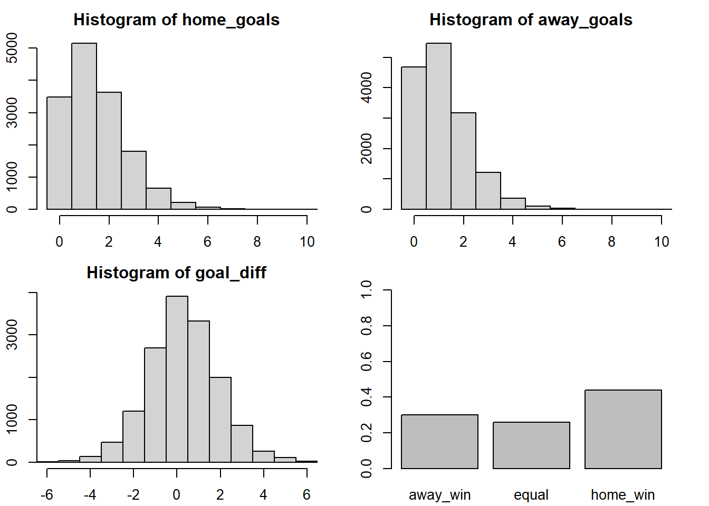
When developing the model (2013-05-28) the author got the specific payouts (that is, how much would I get back if my bet was successful) for betting on the outcome of this game on a betting site. Using my simulated distribution of the number of goals I can calculate the predicted payouts of my model.
1/c(Sevilla = mean(home_goals > away_goals), Draw = mean(home_goals == away_goals),
Valencia = mean(home_goals < away_goals))NA Sevilla Draw Valencia
NA 2.281369 3.841229 3.318584I should clearly bet on Sevilla as my model predicts a payout of \(2.24\) (that is, a likely win for Sevilla) while betsson.com gives me the much higher payout of \(3.2\). It is also possible to bet on the final goal outcome so let’s calculate what payouts my model predicts for different goal outcomes.
goals_payout <- laply(0:6, function(home_goal) {
laply(0:6, function(away_goal) {
1/mean(home_goals == home_goal & away_goals == away_goal)
})
})
colnames(goals_payout) <- paste("Valencia", 0:6, sep = " - ")
rownames(goals_payout) <- paste("Sevilla", 0:6, sep = " - ")
goals_payout <- round(goals_payout, 1)
knitr::kable(goals_payout, "pandoc", align = "c")| Valencia - 0 | Valencia - 1 | Valencia - 2 | Valencia - 3 | Valencia - 4 | Valencia - 5 | Valencia - 6 | |
|---|---|---|---|---|---|---|---|
| Sevilla - 0 | 13.8 | 11.9 | 21.5 | 47.3 | 161.3 | 714.3 | 2500.0 |
| Sevilla - 1 | 9.5 | 8.0 | 13.4 | 36.9 | 122.0 | 441.2 | 1666.7 |
| Sevilla - 2 | 12.8 | 11.5 | 19.4 | 56.4 | 176.5 | 625.0 | 1875.0 |
| Sevilla - 3 | 26.5 | 22.9 | 39.8 | 97.4 | 500.0 | 1363.6 | Inf |
| Sevilla - 4 | 81.5 | 58.8 | 101.4 | 306.1 | 1071.4 | 3000.0 | Inf |
| Sevilla - 5 | 211.3 | 223.9 | 319.1 | 1000.0 | 2500.0 | 15000.0 | Inf |
| Sevilla - 6 | 750.0 | 483.9 | 1500.0 | 3000.0 | 7500.0 | Inf | Inf |
The most likely result is 1 - 1 with a predicted payout of \(8.4\) and the beeting site agrees with this also offering their lowest payout for this bet, \(5.3\). Not good enough! Looking at the payouts at the beeting site I can see that Sevilla - Valencia: 2 - 0 gives me a payout of \(16.0\), that’s much better than my predicted payout of \(13.1\). I’ll go for that!
Conclusions
I believe the model has a lot things going for it. It is conceptually quite simple and easy to understand, implement and extend. It captures the patterns in and distribution of the data well. It allows me to easily calculate the probability of any outcome, from a game with whichever teams from any La Liga season. Want to calculate the probability that RCD Mallorca (home team) vs Malaga CF (away team) in the Season 2009/2010 would result in a draw? Easy! What’s the probability of the total number of goals in Granada CF vs Athletic Club Bilbao being a prime number? No problemo! What if Real Madrid from 2008/2009 met Barcelona from 2012/2013 in 2010/2011 and both teams had the home advantage? Well, that’s possible. There are also a couple of things that could be improved (many which are not too hard to address). Currently there is assumed to be no dependency between the goal distributions of the home and away teams, but this might not be realistic. Maybe if one team have scored more goals the other team “looses steam” (a negative correlation between the teams’ scores) or instead maybe the other team tries harder (a positive correlation). Such dependencies could maybe be added to the model using copulas. * One of the advantages of Bayesian statistics is the possibility to used informative priors. As I have no knowledge of football I’ve been using vague priors but with the help of a more knowledgeable football fan the model could be given more informative priors. Also, the predictive performance of the model has not been as thoroughly examined and this could be remedied with a healthy dose of cross validation.
References
Bååth, Rasmus. 2015. “Modeling Match Results in Soccer Using a Hierarchical Bayesian Poisson Model.” Technical Report LUCS minor 18, Lund University Cognitive Science, Lund, Sweden.
Plummer, Martyn. 2004. “JAGS: Just Another Gibbs Sampler.”
Su, Yu-Sung, Masanao Yajima, Maintainer Yu-Sung Su, and JAGS SystemRequirements. 2015. “Package ‘R2jags’.” R Package Version 0.03-08, URL Http://CRAN. R-Project. Org/Package= R2jags.